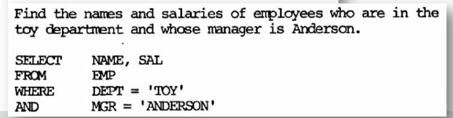
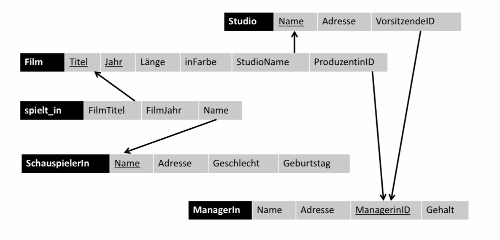
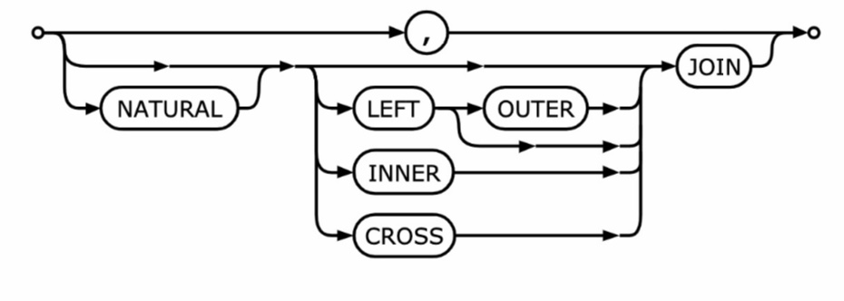
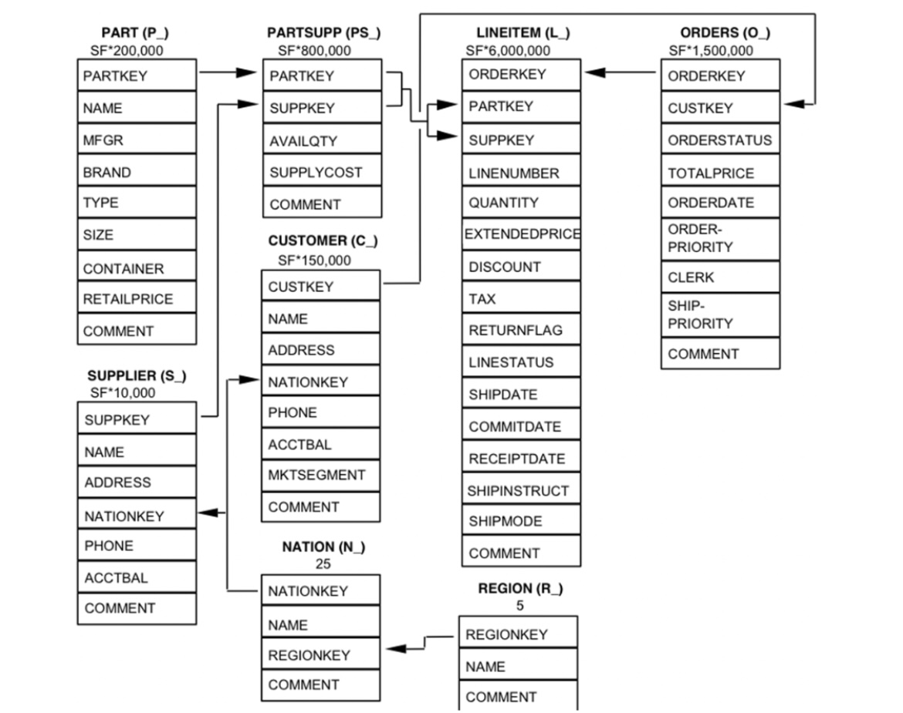
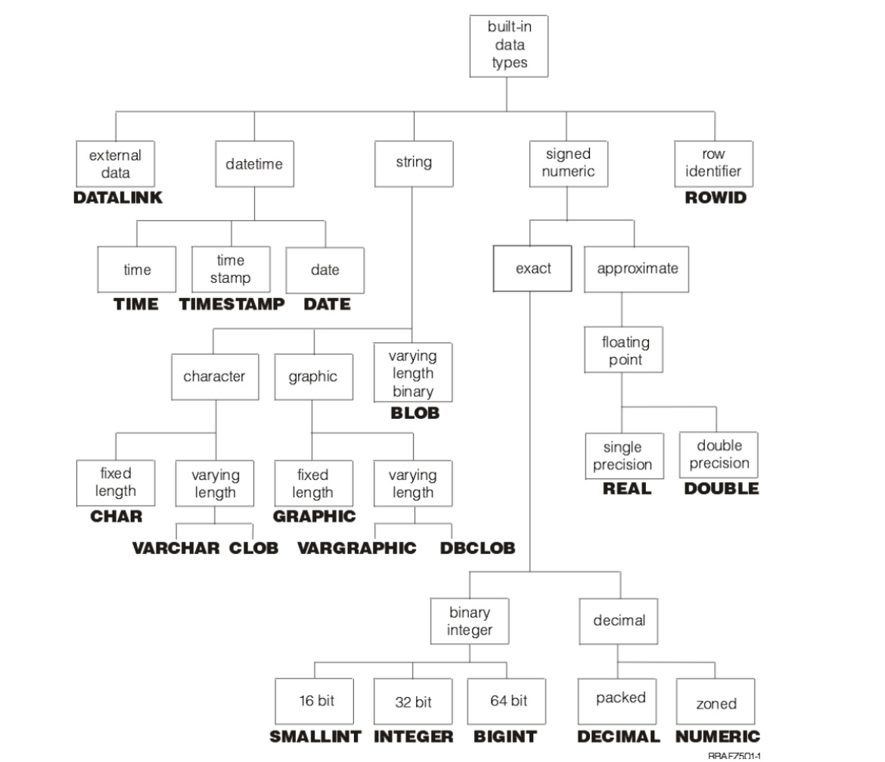
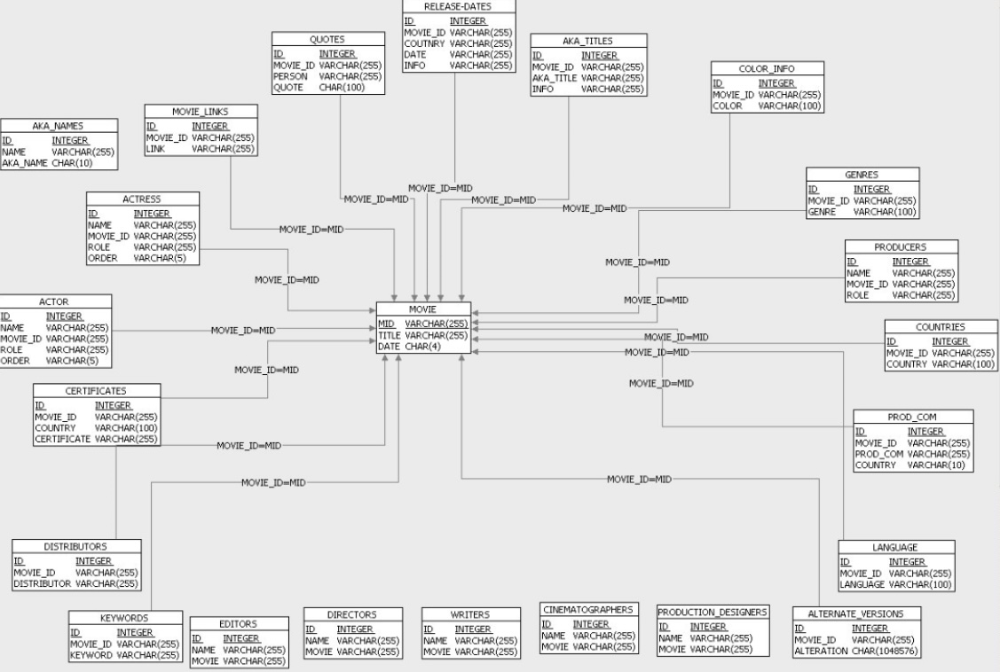
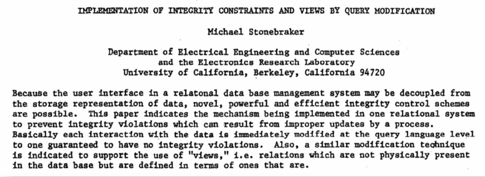
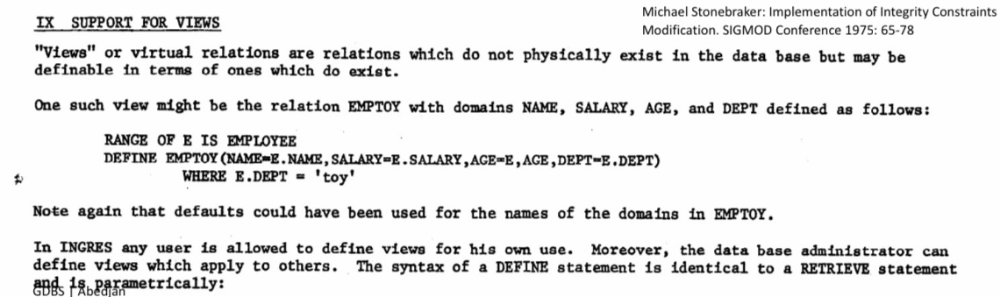
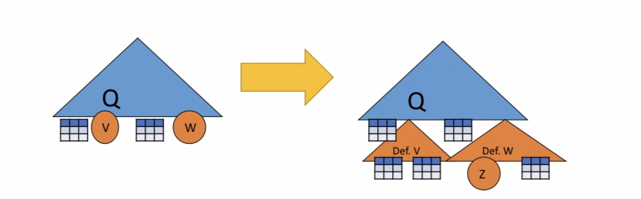

SQL
Contents
9. SQL#
import sqlite3
import pandas as pd
%load_ext sql
%sql sqlite:///filme/filme.db
%sql sqlite:///abteilung/abteilung.db
%sql sqlite:///buecher/buecher.db
%sql sqlite:///lehre/lehre.db
%sql sqlite:///rst/rst.db
%sql sqlite:///salesDB/salesDB.db
9.1. Einführung#
Aus den vorherigen Kapiteln haben wir gelernt wie wir eine Datenbank auf Papier entwerfen, nun schauen wir uns die in der Realität benutzten technischen Mitteln an, insbesondere die Datenbankanfragesprache SQL.
9.1.1. Motivation für SQL#
SQL ist die meist-verbreiteste Datenbankanfragesprache. Es handelt sich hierbei um eine Very-High-Level Language, die Ad-hoc, deklarativ und nicht prozedural / imperativ ist. SQL-Anfragen sich an die relationale Algebra angelehnt. Zusätzlich sind Data definition(DDL) und Data manipulation(DML) mit SQL möglich. Wichtig zu beachten ist noch, dass sowohl Syntax, als auch Funktionalität sich von System zu System leicht unterscheiden können.
9.1.2. SQL-Historie#
SQL(1982, IBM) entstand durch die Ursprungssprache SEQUEL(1976, IBM Research Labs San Jose). Später entwickelte sich SEQUEL zu SEQUEL2(1976, IBM Research Labs San Jose), welche auf einer der Vorreitern von Datenbanksystemen “System R” benutzt wurde.

9.1.3. SQL – Standardisierung#
Im Laufe der Zeit durchlief SQL verschiedene Standardisierungen, die Sie aus der folgenden Auflistung entnehmen können. Trotz der Standardisierung sind Inkompatibilitäten zwischen Systemen der einzelnen Hersteller noch möglich.
SQL1 von ANSI als Standard verabschiedet (1986)
SQL1 von der (ISO) als Standard verabschiedet (1987)
1989 nochmals überarbeitet.
SQL2 oder SQL-92 von der ISO verabschiedet (1992)
SQL3 oder SQL:1999 verabschiedet
Trigger, rekursive Anfragen
Objektrelationale Erweiterungen
SQL:2003 von der ISO verabschiedet
XML-Support durch SQL/XML
SQL/XML:2006
XQuery eingebunden
SQL:2008
Updates auf Sichten, logisches Löschen (TRUNCATE), …
SQL:2011
Adds temporal data (PERIOD FOR)
SQL:2016
Adds row pattern matching, polymorphic table functions, JSON.
9.1.4. SQL:2008 Struktur#
Part 1: Framework (SQL/Framework) – 82 Seiten
Überblick
Part 2: Foundation (SQL/Foundation) – 1316 Seiten
Datenmodell, DDL, DML, Abfragen
Part 3: Call-Level Interface (SQL/CLI) – 389 Seiten
Zugriff auf DBMS mittels Funktionsaufrufen aus anderen Programmiersprachen
Part 4: Persistent Stored Modules (SQL/PSM) – 188 Seiten
Prozedurale Erweiterungen
Part 9: Management of External Data (SQL/MED) – 484 Seiten
Neue Datentypen und Funktionen
Part 10: Object Language Bindings (SQL/OLB) – 396 Seiten
Auch (SQLJ); zur Einbettung von SQL in Java
Part 11: Information and Definition Schemas (SQL/Schemata) – 286 Seiten
DBMS werden selbst-beschreibend durch normierten Katalog
Part 13: SQL Routines and Types (SQL/JRT) – 198 Seiten
Externe Java Routinen als „stored procedures“
Part 14: XML-Related Specifications (SQL/XML) – 438 Seiten
XML Datentyp und Erweiterung von SQL um XQuery
=> Zusammen: 3777 Seiten
9.2. Einfach Anfragen#
In diesem Kapitel werden die Grundlagen einer SQL-Anfrage thematisiert. Zuerst wird die SFW-Klausel eingeführt, gefolgt mit grundlegenden Datentypen, Stringvergleichen und abschließend der Sortierung mittels Anfragen.
9.2.1. SELECT … FROM … WHERE …#
SQL-Anfragen folgen meist einer Drei-Zeilen-Struktur aus SELECT, FROM, WHERE, wobei SELECT und FROM in jeder SQL-Anfrage enthalten sein müssen. Das Schlüsselwort SELECT entspricht dem Projektionsoperator \(\pi\), den wir aus dem Kapitel Relationale Algebra schon kennengelernt haben. Die FROM-Zeile gibt an von welchen Tabellen die Daten stammen sollen. WHERE entspricht gewissermaßen dem Selektionsoperator \(\sigma\), hier werden also Bedingungen an die Tupel gestellt die diese erfüllen sollen.
Betrachten wir folgendes Beispielschema für Filme, welches aus den vorherigen Kapiteln bekannt sein sollte. Wir möchten nun eine Anfrage formulieren, die uns alle Filme ausgibt, welche von Disney produziert und im Jahre 1990 erschienen sind.
9.2.2. Beispielschema#

#SELECT *
#FROM Film
#WHERE StudioName = "Disney" AND Jahr= 1990;
__SQL__ = "SELECT * FROM Film WHERE StudioName = 'Disney' AND Jahr= 1990"
conn = sqlite3.connect("filme/filme.db")
df = pd.read_sql_query(__SQL__, conn)
df
| Titel | Jahr | Laenge | inFarbe | StudioName | ProduzentinID | |
|---|---|---|---|---|---|---|
| 0 | Ducktales the Movie: Treasure of the Lost Lamp | 1990 | 74 | TRUE | Disney | 1234 |
| 1 | Shipwrecked | 1990 | 92 | TRUE | Disney | 1234 |
| 2 | The Rescuers Down Under | 1990 | 77 | TRUE | Disney | 1234 |
Wir benutzen SELECT *, wodurch uns alle Attribute der ausgewählten Tabelle ausgegeben werden, alternativ kann man auch SELECT Titel, Jahr, Laenge... machen. Da wir alle Filme ausgeben wollen, schreiben wir FROM Film, da wir Tupel aus der Tabelle Film wollen. Zuletzt selektieren wir die Tupel, die StudioName = "Disney" und Jahr = 1990 erfüllen.
In SQL wird Groß- und Kleinschreibung nicht beachtet, sowohl bei Schlüsselwörtern wie SELECT, FROM, WHERE usw., als auch bei Attribut- und Relationen.
D.h es gilt also:
From = FROM = from = FrOm
Und die folgenden Anfragen sind äquivalent:
SELect vorNAMe fROm fiLM
SELECT vorname FROM film
Anders ist es natürlich bei Konstanten:
‘FROM‘ ≠ ‘from‘ ≠ from = FROM
Trotzdem gilt als Konvention zur Lesbarkeit, dass Schlüsselwörter großgeschrieben werden und Schemaelemente klein.
9.2.3. Projektion in SQL (SELECT, \(\pi\))#
Wir betrachten nun die einzelnen Schlüsselwörter etwas genauer und starten mit der Projektion. In der SELECT Klausel werden Attribute von Relationen aufgelistet, die herausprojeziert werden sollen.
Im folgenden Beipiel wollen wir alle Attribute bzw. Spalten aus der Filmrelation ausgeben, der Stern * ist hier eine kürzere Schreibweise für alle Attribute.
#SELECT *
#FROM Film
__SQL__ = " SELECT * FROM Film LIMIT 10"
conn = sqlite3.connect("filme/filme.db")
df = pd.read_sql_query(__SQL__, conn)
df
| Titel | Jahr | Laenge | inFarbe | StudioName | ProduzentinID | |
|---|---|---|---|---|---|---|
| 0 | Inside Out | 2015 | 95 | TRUE | Disney | 1234 |
| 1 | Toy Story | 1999 | 81 | TRUE | Disney | 1234 |
| 2 | Up | 2009 | 96 | TRUE | Pixar | 4567 |
| 3 | Ratatouille | 2007 | 111 | TRUE | Pixar | 4567 |
| 4 | Star Wars | 1977 | 121 | TRUE | Pinewood | 78910 |
| 5 | Star Trek | 1979 | 132 | TRUE | Paramount | 6789 |
| 6 | Lady Bird | 2017 | 95 | TRUE | Scott Rudin Productions | 3456 |
| 7 | Into the Wild | 2007 | 148 | TRUE | Paramount | 6789 |
| 8 | Brokeback Mountain | 2005 | 134 | TRUE | River Road | 4712 |
| 9 | The Lighthouse | 2019 | 109 | FALSE | A24 | 1748 |
Es ist auch möglich konkret die Attributsnamen aufzulisten, die ausgegeben sollen werden. Im unteren Beispiel, geben wir nur die Spalten Titel, Jahr und inFarbe von der Filmrelation aus.
#SELECT Titel, Jahr, inFarbe
#FROM Film
__SQL__ = "SELECT Titel, Jahr, inFarbe FROM Film LIMIT 10"
conn = sqlite3.connect("filme/filme.db")
df = pd.read_sql_query(__SQL__, conn)
df
| Titel | Jahr | inFarbe | |
|---|---|---|---|
| 0 | Inside Out | 2015 | TRUE |
| 1 | Toy Story | 1999 | TRUE |
| 2 | Up | 2009 | TRUE |
| 3 | Ratatouille | 2007 | TRUE |
| 4 | Star Wars | 1977 | TRUE |
| 5 | Star Trek | 1979 | TRUE |
| 6 | Lady Bird | 2017 | TRUE |
| 7 | Into the Wild | 2007 | TRUE |
| 8 | Brokeback Mountain | 2005 | TRUE |
| 9 | The Lighthouse | 2019 | FALSE |
In der SELECT Klausel ist es auch möglich die Attributsnamen in der Ausgabetabelle umzubenennen. Die Ausgabe einer SQL-Anfrage ist immer eine Tabelle. Im unteren Beispiel projezieren wir die Attribute Titel, Jahr aus der Filmrelation und benennen die Attribute in unserer Ausgabetabelle zu Name,Zeit um.
#SELECT Titel AS Name, Jahr AS Zeit
#FROM Film
__SQL__ = "SELECT Titel AS Name, Jahr AS Zeit FROM Film LIMIT 10"
conn = sqlite3.connect("filme/filme.db")
df = pd.read_sql_query(__SQL__, conn)
df
| Name | Zeit | |
|---|---|---|
| 0 | Inside Out | 2015 |
| 1 | Toy Story | 1999 |
| 2 | Up | 2009 |
| 3 | Ratatouille | 2007 |
| 4 | Star Wars | 1977 |
| 5 | Star Trek | 1979 |
| 6 | Lady Bird | 2017 |
| 7 | Into the Wild | 2007 |
| 8 | Brokeback Mountain | 2005 |
| 9 | The Lighthouse | 2019 |
In der SELECT-Klausel ist es auch möglich arithmetische Ausdrücke zu benutzen. Im folgenden Beispiel werden Titel und Laenge der Filme herausprojeziert, wobei die Laenge direkt mit einer Konstanten multipliziert wird. Daher wird in der Ausgabetabelle die Laenge in Stunden und nicht in Minuten angegeben. Dementsprechend haben wir auch das Attribut Laenge in Stunden mit dem Umbenennungsoperator AS umbenannt.
#SELECT Titel, Laenge * 0.016667 AS Stunden
#FROM Film
__SQL__ = "SELECT Titel, Laenge * 0.016667 AS Stunden FROM Film LIMIT 10"
conn = sqlite3.connect("filme/filme.db")
df = pd.read_sql_query(__SQL__, conn)
df
| Titel | Stunden | |
|---|---|---|
| 0 | Inside Out | 1.583365 |
| 1 | Toy Story | 1.350027 |
| 2 | Up | 1.600032 |
| 3 | Ratatouille | 1.850037 |
| 4 | Star Wars | 2.016707 |
| 5 | Star Trek | 2.200044 |
| 6 | Lady Bird | 1.583365 |
| 7 | Into the Wild | 2.466716 |
| 8 | Brokeback Mountain | 2.233378 |
| 9 | The Lighthouse | 1.816703 |
Zudem ist es auch möglich, sich spezielle Konstanten ausgeben zu lassen. Im unteren Beispiel fügen wir der Ausgabetabelle eine neue Spalte hinzu, mit dem Namen inStunden, in der der String ‘std.’ steht
#SELECT Titel, Laenge * 0.016667 AS Stunden, ‘std.‘ AS inStunden
#FROM Film
__SQL__ = "SELECT Titel, Laenge * 0.016667 AS Stunden, 'std.' AS inStunden FROM Film LIMIT 10"
conn = sqlite3.connect("filme/filme.db")
df = pd.read_sql_query(__SQL__, conn)
df
| Titel | Stunden | inStunden | |
|---|---|---|---|
| 0 | Inside Out | 1.583365 | std. |
| 1 | Toy Story | 1.350027 | std. |
| 2 | Up | 1.600032 | std. |
| 3 | Ratatouille | 1.850037 | std. |
| 4 | Star Wars | 2.016707 | std. |
| 5 | Star Trek | 2.200044 | std. |
| 6 | Lady Bird | 1.583365 | std. |
| 7 | Into the Wild | 2.466716 | std. |
| 8 | Brokeback Mountain | 2.233378 | std. |
| 9 | The Lighthouse | 1.816703 | std. |
9.2.4. Selektion in SQL (WHERE, \(\sigma\))#
Die Selektion die wir aus der relationalen Algebra kennen wird in SQL mit dem Schlüsselwort WHERE ausgedrückt, nicht mit dem Schlüsselwort SELECT. Wie aus anderen Programmiersprachen bekannt, kann man in der WHERE-Klausel Bedinungen aufstellen.
Es gibt sechs Vergleichsoperatoren =, <>, <, >, <=, >=(gleich, ungleich, kleiner, größer, kleiner gleich, größer gleich), hier können Sie links und rechts der Vergleichsoperatoren Konstanten und Attribute einsetzen. Insbesondere ist es auch möglich Attribute in der WHERE-Klausel zu vergleichen, die nicht in der SELECT- Klausel herausprojeziert werden. Auch im WHERE kann man arithmetische Ausdrücke in die Bedingung einbauen wie in diesem Beispiel:
(Jahr - 1930) * (Jahr - 1930) <= 100
Und Konstanten und auch Variablen konkatenieren:
‘Star‘ || ‘Wars‘
entspricht
‘StarWars‘
oder ein Beispiel mit Variablen:
Vorname || ' ' || Nachname = 'Luke Skywalker'
Hier werden die Variablen Vorname und Nachname mit einer Leerstelle konkateniert und verglichen, ob der String ‘Luke Skywalker’ entspricht.
Das Ergebnis der Vergleichsoperation in SQL ist dann ein Bool’escher Wert, als TRUE oder FALSE. Dementsprechend können mehrere Vergleichsoperatoren mit AND, OR und NOT verknüpft werden, wobei die Klammerungen auch den bekannten Regeln der Logik entsprechen.
Nur wenn die gesamte WHERE-Klausel zu TRUE evaluiert wird, werden die entsprechenden Tupel ausgegeben.
Im unteren Beispiel wollen wir jene Titel aus der Relation Film ausgeben, die nach dem Jahr 1970 erschienen und schwarz-weiß sind
#SELECT Titel
#FROM Film
#WHERE Jahr > 1970 AND NOT inFarbe;
__SQL__ = "SELECT Titel FROM Film WHERE Jahr > 1970 AND NOT inFarbe LIMIT 10"
conn = sqlite3.connect("filme/filme.db")
df = pd.read_sql_query(__SQL__, conn)
df
| Titel | |
|---|---|
| 0 | Inside Out |
| 1 | Toy Story |
| 2 | Up |
| 3 | Ratatouille |
| 4 | Star Wars |
| 5 | Star Trek |
| 6 | Lady Bird |
| 7 | Into the Wild |
| 8 | Brokeback Mountain |
| 9 | The Lighthouse |
In diesem Beispiel möchten wir wieder alle Filmtitel ausgeben, hier aber alle Filme die von MGM produziert wurden sind und nach dem Jahr 1970 erschienen sind oder kürzer als 90 min sind.
#SELECT Titel
#FROM Film
#WHERE (Jahr > 1970 OR Laenge < 90) AND StudioName = "MGM";
__SQL__ = "SELECT Titel FROM Film WHERE (Jahr > 1970 OR Laenge < 90) AND StudioName = 'MGM';"
conn = sqlite3.connect("filme/filme.db")
df = pd.read_sql_query(__SQL__, conn)
df
| Titel | |
|---|---|
| 0 | House of Gucci |
| 1 | James Bond 007: Spectre |
9.2.5. Stringvergleiche#
In SQL gibt es Datentypen unteranderem die Datentypen Array fester Länge, Buchstabenliste variabler Länge und Konstanten. Es sind viele Vergleiche über Datentypen hinweg erlaubt. In diesem Beispiel vergleichen wir eine Variable mit einer weiteren Variable und einer Stringkonstanten:
foo _ _ _ _ _ = foo = ‘foo‘
Ebenfalls sind lexikographische Vergleiche mit den schon bekannten Vergleichsoperatoren =, <, >, <=, >=, <> möglich. Je nach verwendeter DBMS werden Sortierreihenfolge mit upper-case/lower-case andere behandelt
'fodder' < 'foo'
'bar' < 'bargain'
9.2.6. String-Mustervergleiche mit LIKE#
Mit dem LIKE Operator können Sie Stringteile miteinander vergleichen, also ob ein String einem gewissen Stringmuster folgt. Hierfür gibt es zwei spezielle Zeichen, einmal %, welches eine beliebige Sequenz von 0 oder mehr Zeichen entspricht und _, welches ein einzelnes beliebiges Zeichen steht. Hierfür ein Beispiel: Wir suchen jene Titel aus der Filmrelation, wo der Titel mit ‘Star’ beginnt, ein Leerzeichen folgt und 4 beliebige Zeichen folgen.
#SELECT Titel
#FROM Film WHERE Titel LIKE "Star ____";
__SQL__ = "SELECT Titel FROM Film WHERE Titel LIKE 'Star ____'"
conn = sqlite3.connect("filme/filme.db")
df = pd.read_sql_query(__SQL__, conn)
df
| Titel | |
|---|---|
| 0 | Star Trek |
| 1 | Star Wars |
Hier suchen wir alle Titel, wo das Wort ‘War’ vorkommen muss. Sowohl vor dem ‘War’ als auch nachdem ‘War’ sind beliebige Zeichensequenzen erlaubt.
#SELECT Titel
#FROM Film
#WHERE Titel LIKE "%War%";
__SQL__ = "SELECT Titel FROM Film WHERE Titel LIKE '%War%'"
conn = sqlite3.connect("filme/filme.db")
df = pd.read_sql_query(__SQL__, conn)
df
| Titel | |
|---|---|
| 0 | Star Wars |
9.2.7. Datum und Uhrzeit#
In SQL gibt es auch Datentypen um Daten und Zeiten darzustellen.Der Datentyp DATE stellt ein Datumskonstante dar:
DATE ‘YYYY-MM-DD‘DATE ‘1948-05-14‘
Zeitkonstanten werden mit dem DatentypTIMEdargestellt:TIME ‘HH:MM:SS.S‘TIME ‘15:00:02.5‘
Zeitstempel, also eine Kombination aus Datum und Zeit, werden mit dem Datentyp TIMESTAMP dargestellt:TIMESTAMP ‘1948-05-14 15:00:02.5‘
Auch dieses Datentypen können wieder miteinander ,in Form von Variablen und Konstanten, verglichen werden:TIME ‘15:00:02.5‘ < TIME ‘15:02:02.5‘ergibtTRUEERSCHEINUNGSTAG >= DATE ‘1949-11-12‘
9.2.8. Nullwerte#
Nullwerte sind spezielle Datentypen, in SQL wird dieser als NULL dargestellt, auf Papier ist auch ⊥ geläufig. Es gibt mehrere Arten einen Nullwert zu interpretieren. Zum einen kann ein Nullwert bedeuten, dass ein Wert unbekannt ist, z.B kann es sein, dass der Geburtstag eines/r Schauspieler*in unbekannt ist. Eine weitere Interpretationsart ist, dass ein Wert eingetragen wurde der unzulässig ist, wie z.B ein Ehegatte eine eines/r Schauspieler*in. Zuletzt können mit Nullwerten bestimmte Zellen oder Spalten maskiert werden, wie z.B bei einer unterdrückten Telefonnummer.
Bei dem Umgang mit Nullwerten gibt es verschiedene Regeln, die beachtet werden müssen. Wird NULL mit arithmetischen Operationen verknüpft, so ergibt sich aus der Verknüpfung wiederum NULL. Bei Vergleichen mit NULL ergibt der Wahrheitswert UNKNOWN und nicht NULL. Man muss auch beachten, dass NULL keine Konstante ist, sondern NULL erscheint als Attributwert, abhängig von dem DBMS gilt NULL = NULL oder NULL \(\neq\) NULL.
Beispiele: Sei der Wert von einer Variablen x NULL. Der Ausdruck x+3 ergibt NULL, da x NULL ist. Der Ausdruck NULL+3 ist unzulässig und kann so auch nicht geschrieben werden. Der Vergleich x=3 ergibt UNKNOWN, auch da x NULL ist.
Weiterhin kann in der WHERE-Klausel mit IS NULL und IS NOT NULL überprüft werden, ob ein Wert NULL its. Z.B:
Geburtstag IS NULL
Geburtstag IS NOT NULL
9.2.9. Wahrheitswerte#
AND |
true |
unknown |
false |
|---|---|---|---|
true |
true |
unknown |
false |
unknown |
unknown |
unknown |
false |
false |
false |
false |
false |
OR |
true |
unknown |
false |
|---|---|---|---|
true |
true |
true |
true |
unknown |
true |
unknown |
unknown |
false |
false |
unknown |
false |
NOT |
|---|
true |
unknown |
false |
Nehmen wir an TRUE=1, FALSE=0 und UNKNOWN = ½. Dann ergeben sich folgende Rechenregeln:
AND: Minimum der beiden Werte
OR: Maximum der beiden Werte
NOT: 1 – Wert
Beispiele:
TRUE AND (FALSE OR NOT(UNKNOWN))
= MIN(1, MAX(0, (1 - ½ )))
= MIN(1, MAX(0, ½ )
= MIN(1, ½ ) = ½.
Zu beachten bei der Ausführungspriorität: NOT vor AND vor OR
#SELECT *
#FROM Film
#WHERE Laenge <= 90
#OR Laenge > 90; --Laenge <= 90 == UNKNOWN und Länge > 90
__SQL__ = "SELECT * FROM Film WHERE Laenge <= 90 OR Laenge > 90 LIMIT 10; --Laenge <= 90 == UNKNOWN und Länge > 90"
conn = sqlite3.connect("filme/filme.db")
df = pd.read_sql_query(__SQL__, conn)
df
| Titel | Jahr | Laenge | inFarbe | StudioName | ProduzentinID | |
|---|---|---|---|---|---|---|
| 0 | Inside Out | 2015 | 95 | TRUE | Disney | 1234 |
| 1 | Toy Story | 1999 | 81 | TRUE | Disney | 1234 |
| 2 | Up | 2009 | 96 | TRUE | Pixar | 4567 |
| 3 | Ratatouille | 2007 | 111 | TRUE | Pixar | 4567 |
| 4 | Star Wars | 1977 | 121 | TRUE | Pinewood | 78910 |
| 5 | Star Trek | 1979 | 132 | TRUE | Paramount | 6789 |
| 6 | Lady Bird | 2017 | 95 | TRUE | Scott Rudin Productions | 3456 |
| 7 | Into the Wild | 2007 | 148 | TRUE | Paramount | 6789 |
| 8 | Brokeback Mountain | 2005 | 134 | TRUE | River Road | 4712 |
| 9 | The Lighthouse | 2019 | 109 | FALSE | A24 | 1748 |
9.2.10. Sortierung#
In SQL sind Sortierungen(ASC für aufsteigend bzw. DESC für absteigend) mit der ORDER BY Klausel möglich, welche an das Ende der Anfrage geschrieben wird. ASC wird als default gewählt:
ORDER BY \<Attributliste\> DESC/ASC
Im folgenden Beispiel wollen wir alle Attribute der Filmrelation ausgeben, welche von Disney produziert wurden und 1990 erschienen sind. Zusätzlich, soll die Ausgabe zuerst nach dem Attribut Laenge und folgend nach dem Attribut Titel aufsteigend sortiert werden.
#SELECT *
#FROM Film
#WHERE StudioName = "Disney"
#AND Jahr = 1990 ORDER BY Laenge, Titel;
__SQL__ = "SELECT * FROM Film WHERE StudioName = 'Disney' AND Jahr = 1990 ORDER BY Laenge,Titel;"
conn = sqlite3.connect("filme/filme.db")
df = pd.read_sql_query(__SQL__, conn)
df
| Titel | Jahr | Laenge | inFarbe | StudioName | ProduzentinID | |
|---|---|---|---|---|---|---|
| 0 | Ducktales the Movie: Treasure of the Lost Lamp | 1990 | 74 | TRUE | Disney | 1234 |
| 1 | The Rescuers Down Under | 1990 | 77 | TRUE | Disney | 1234 |
| 2 | Shipwrecked | 1990 | 92 | TRUE | Disney | 1234 |
Hier wird zuerst nach Laenge aufsteigend sortiert und folgend nach Titel aber absteigend.
#SELECT *
#FROM Film
#WHERE StudioName = "Disney"
#AND Jahr = 1990 ORDER BY Laenge ASC, Titel DESC;
__SQL__ = "SELECT * FROM Film WHERE StudioName = 'Disney' AND Jahr = 1990 ORDER BY Laenge ASC, Titel DESC;"
conn = sqlite3.connect("filme/filme.db")
df = pd.read_sql_query(__SQL__, conn)
df
| Titel | Jahr | Laenge | inFarbe | StudioName | ProduzentinID | |
|---|---|---|---|---|---|---|
| 0 | Ducktales the Movie: Treasure of the Lost Lamp | 1990 | 74 | TRUE | Disney | 1234 |
| 1 | The Rescuers Down Under | 1990 | 77 | TRUE | Disney | 1234 |
| 2 | Shipwrecked | 1990 | 92 | TRUE | Disney | 1234 |
9.3. Anfragen über mehrere Relationen#
Die Hauptstärke der Relationalen Algebra ist die Kombination von Relationen. Erst durch die Kombination mehrerer Relationen sind viele interessante Anfragen möglich. In SQL ist das möglich, indem man die beteiligten Relationen in der FROM-Klausel nennt. In diesem Kapitel werden v.A. die verschiedenen Joinvarianten, aber auch das Kreuzprodukt und andere Mengenoperatoren in SQL thematisiert.
9.3.1. Kreuzprodukt und Join#
Im folgenden Beispiel haben wir die Relationen Film(Titel, Jahr, Länge, inFarbe, StudioName, ProduzentinID) und
ManagerIn(Name, Adresse, ManagerinID, Gehalt) gegeben. Wir möchten nun alle Namen der Manager*Innen ausgeben, die einen Star Wars Film produziert haben. Hierfür müssen die Relationen Film und ManagerIn gejoint werden. Zuerst bilden wir das Kruezprodukt der beiden Relationen, indem wir in der FROM-Klausel die Relationen mit einem Komma getrennt nennen , so wird intern das Kreuzprodukt dieser beiden gebildet. Schließlich wenden wir noch einmal die Selektionsbedingung an, also dass nur ManagerInnen die einen Star Wars Film produziert haben ausgegeben werden. Und zuletzt noch die Joinbedingung, undzwar dass ProduzentinID und ManagerinID im Kreuzprodukt übereinstimmen sollen. Falls die beiden Bedinungen erfüllt sind wird ein Ergebnistupel produziert. Hierbei ist noch zu beachten, dass die Reihenfolge der WHERE-Bedingungen irrelevant ist.
#SELECT Name
#FROM Film, ManagerIn
#WHERE Titel = "Star Wars"
#AND ProduzentinID = ManagerinID;
__SQL__ = "SELECT Name FROM Film, ManagerIn WHERE Titel = 'Star Wars' AND ProduzentinID = ManagerinID"
conn = sqlite3.connect("filme/filme.db")
df = pd.read_sql_query(__SQL__, conn)
df
| Name | |
|---|---|
| 0 | Paul Golding |
#SELECT Name
#FROM Film, ManagerIn --Kreuzprodukt
#WHERE Titel = "Star Wars" --Selektionsbedingung
#AND ProduzentinID = ManagerinID; --Joinbedingung
__SQL__ = "SELECT Name FROM Film, ManagerIn WHERE Titel = 'Star Wars' AND ProduzentinID = ManagerinID"
conn = sqlite3.connect("filme/filme.db")
cur = conn.cursor()
df = pd.read_sql_query(__SQL__, conn)
df
| Name | |
|---|---|
| 0 | Paul Golding |
9.3.2. Uneindeutige Attributnamen#
In diesem Beispiel haben wir die Relationen SchauspielerIn(Name, Adresse, Geschlecht, Geburtstag) und ManagerIn(Name, Adresse, ManagerinID, Gehalt) gegeben. Beide Relationen haben ein Attribut namens Name. Wir wollen nun die Namen der Schauspieler*Innen und Manager*Innen ausgeben, die die selbe Adresse haben. Wie im vorherigen Beispiel, bilden wir wieder das Kreuzprodukt beider. Da nur der Attributname der Relationen uneindeutig wäre, muss in der Anfrage immer ein Präfix vor das Attribut gesetzt werden. Auch bei keiner Uneindeutigkeit, kann man das Präfix schreiben, was manchmal as Lesen von SQL-Anfragen erleichtert.
#SELECT SchauspielerIn.Name, ManagerIn.Name
#FROM SchauspielerIn, ManagerIn
#WHERE SchauspielerIn.Adresse = ManagerIn.Adresse;
__SQL__ = "SELECT SchauspielerIn.Name, ManagerIn.Name FROM SchauspielerIn, ManagerIn WHERE SchauspielerIn.Adresse = ManagerIn.Adresse;"
conn = sqlite3.connect("filme/filme.db")
df = pd.read_sql_query(__SQL__, conn)
df
| Name | Name |
|---|
9.3.3. Tupelvariablen#
In SQL ist es möglich einen Alias für eine Relation innerhalb einer Anfrage festzulegen. Dies ist sinnvoll, um die Tupeln, der beteiligten Relationen eindeutig zu Kennzeichnen, insbesondere wenn eine Relation mehrfach innerhalb einer Anfrage vorkommt. Umbenennung kann ebenfalls sinnvoll sein, um lange Relationennamen abzukürzen, um bessere Lesbarkeit zu schaffen. Ein Beispiel hierfür ist, z.B der Selfjoin im unteren Beispiel ,wo wir Schauspieler suchen, die zusammenleben. Und das Beispiel danach, wo wir Umbennenung zur Verkürzung der Anfrage benutzen.
SchauspielerIn Star2
ist äquivalent zu
SchauspielerIn AS Star2
#SELECT Star1.Name, Star2.Name
#FROM SchauspielerIn Star1, SchauspielerIn Star2
#WHERE Star1.Adresse = Star2.Adresse
__SQL__ = "SELECT Star1.Name, Star2.Name FROM SchauspielerIn Star1, SchauspielerIn Star2 WHERE Star1.Adresse = Star2.Adresse LIMIT 10"
conn = sqlite3.connect("filme/filme.db")
df = pd.read_sql_query(__SQL__, conn)
df
| Name | Name | |
|---|---|---|
| 0 | Arnold Schwarzenegger | Arnold Schwarzenegger |
| 1 | Sharon Stone | Sharon Stone |
| 2 | Robert Pattinson | Robert Pattinson |
| 3 | Scarlet Johansson | Scarlet Johansson |
| 4 | Saorise Ronan | Saorise Ronan |
| 5 | Jake Gyllenhaal | Jake Gyllenhaal |
| 6 | Heath Ledger | Heath Ledger |
| 7 | Mark Hamill | Mark Hamill |
| 8 | Carrie Fisher | Carrie Fisher |
| 9 | Harrison Ford | Harrison Ford |
#SELECT S.Name, M.Name
#FROM SchauspielerIn S, ManagerIn M
#WHERE S.Adresse = M.Adresse;
__SQL__ = "SELECT S.Name, M.Name FROM SchauspielerIn S, ManagerIn M WHERE S.Adresse = M.Adresse;"
conn = sqlite3.connect("filme/filme.db")
df = pd.read_sql_query(__SQL__, conn)
df
| Name | Name |
|---|
9.3.4. Tupelvariablen-Selfjoin#
#SELECT Star1.Name, Star2.Name
#FROM SchauspielerIn Star1, SchauspielerIn Star2
#WHERE Star1.Adresse = Star2.Adresse;
__SQL__ = "SELECT Star1.Name, Star2.Name FROM SchauspielerIn Star1, SchauspielerIn Star2 WHERE Star1.Adresse = Star2.Adresse LIMIT 10;"
conn = sqlite3.connect("filme/filme.db")
df = pd.read_sql_query(__SQL__, conn)
df
| Name | Name | |
|---|---|---|
| 0 | Arnold Schwarzenegger | Arnold Schwarzenegger |
| 1 | Sharon Stone | Sharon Stone |
| 2 | Robert Pattinson | Robert Pattinson |
| 3 | Scarlet Johansson | Scarlet Johansson |
| 4 | Saorise Ronan | Saorise Ronan |
| 5 | Jake Gyllenhaal | Jake Gyllenhaal |
| 6 | Heath Ledger | Heath Ledger |
| 7 | Mark Hamill | Mark Hamill |
| 8 | Carrie Fisher | Carrie Fisher |
| 9 | Harrison Ford | Harrison Ford |
Damit wir wie in der Ausgabe der obigen Beispiels, keine redundanten Tupel haben, setzten wir zusätzlich noch die Bedingung, dass die Namen der Schauspieler\*Innen verschieden sein müssen.
#SELECT Star1.Name, Star2.Name
#FROM SchauspielerIn Star1, SchauspielerIn Star2
#WHERE Star1.Adresse = Star2.Adresse
#AND Star1.Name <> Star2.Name;
__SQL__ = "SELECT Star1.Name, Star2.Name FROM SchauspielerIn Star1, SchauspielerIn Star2 WHERE Star1.Adresse = Star2.Adresse AND Star1.Name <> Star2.Name;"
conn = sqlite3.connect("filme/filme.db")
cur = conn.cursor()
df = pd.read_sql_query(__SQL__, conn)
df
| Name | Name | |
|---|---|---|
| 0 | Vincent Cassel | Léa Seydoux |
| 1 | Cameron Diaz | Leonardo DiCaprio |
| 2 | Leonardo DiCaprio | Cameron Diaz |
| 3 | Tobey Maguire | Kirsten Dunst |
| 4 | Kirsten Dunst | Tobey Maguire |
| 5 | Ryan Gosling | Jared Leto |
| 6 | Jared Leto | Ryan Gosling |
| 7 | Léa Seydoux | Vincent Cassel |
9.3.5. Interpretation von Anfragen#
Anfragen können auf unterschiedlich Arten und Weisen interpretiert werden. Es gibt drie Interpretationsvarianten für Anfragen mit mehreren Relationen. Mit der Nested Loops(geschachtelte Schleifen) gibt es bei mehreren Tupelvariablen, für jede Variable eine geschachtelte Schleife. Bei der parallelen Zuordnung werden alle Kombinationen parallel bzgl. der Bedingungen geprüft. In der Relationen Algebra wird zuerst das Kreuzprodukt gebildet und dann auf jedes Resulat-Tupel die Selektionsbedingungen angewendet.
Im folgenden Beispiel sind die Relationen R(A), S(A) und T(A) mit dem selben Attribut A gegeben. Wir suchen die folgenden Tupel R ∩ (S ∪ T) (= (R ∩ S) ∪ (R ∩ T) ). Nehmen wir an dass T leer sei, das vermeintliche Resultat ist R ∩ S. Mit Nested Loops ist das Ergebnis jedoch leer.
#SELECT R.A
#FROM R, S, T
#WHERE R.A = S.A
#OR R.A = T.A;
__SQL__ = "SELECT R.A FROM R, S, T WHERE R.A = S.A OR R.A = T.A;"
conn = sqlite3.connect("rst/rst.db")
df = pd.read_sql_query(__SQL__, conn)
df
| A | |
|---|---|
| 0 | 2 |
| 1 | 6 |
| 2 | 4 |
Im folgenden Beispiel ist das Ergebnis mit Nested Loops nicht leer.
#SELECT *
#FROM
#(
# (SELECT A FROM R)
# INTERSECT
# (SELECT * FROM
# (SELECT A FROM S)
# UNION
# (SELECT A FROM T)
# )
#)
__SQL__ = "SELECT * FROM (SELECT A FROM R INTERSECT SELECT * FROM (SELECT A FROM S) UNION SELECT A FROM T)"
conn = sqlite3.connect("rst/rst.db")
df = pd.read_sql_query(__SQL__, conn)
df
| A | |
|---|---|
| 0 | 2 |
| 1 | 4 |
| 2 | 6 |
| 3 |
9.3.6. Joins#

Bis hierhin haben wir Joins nur mit Komma zwischen den Relationennamen in der FROM-Klausel und der Joinbedingung in der WHERE-Klausel kennengelernt. Kreuzprodukte können auch mit CROSS JOIN ausgedrückt werden, z.B Film CROSS JOIN spielt_in, hier werden direkt doppelte Attributnamen mit Präfix der Relation schon aufgelöst.
Ein Beispiel für ein Theta-Join finden wir unten.
#SELECT *
#FROM Film JOIN spielt_in ON Titel = FilmTitel
#AND Jahr = FilmJahr
__SQL__ = "SELECT * FROM Film JOIN spielt_in ON Titel = FilmTitel AND Jahr = FilmJahr LIMIT 10"
conn = sqlite3.connect("filme/filme.db")
df = pd.read_sql_query(__SQL__, conn)
df
| Titel | Jahr | Laenge | inFarbe | StudioName | ProduzentinID | FilmTitel | FilmJahr | Name | |
|---|---|---|---|---|---|---|---|---|---|
| 0 | Star Wars | 1977 | 121 | TRUE | Pinewood | 78910 | Star Wars | 1977 | Mark Hamill |
| 1 | Star Wars | 1977 | 121 | TRUE | Pinewood | 78910 | Star Wars | 1977 | Harrison Ford |
| 2 | Star Wars | 1977 | 121 | TRUE | Pinewood | 78910 | Star Wars | 1977 | Carrie Fisher |
| 3 | Into the Wild | 2007 | 148 | TRUE | Paramount | 6789 | Into the Wild | 2007 | Emile Hirsch |
| 4 | Brokeback Mountain | 2005 | 134 | TRUE | River Road | 4712 | Brokeback Mountain | 2005 | Jake Gyllenhaal |
| 5 | Brokeback Mountain | 2005 | 134 | TRUE | River Road | 4712 | Brokeback Mountain | 2005 | Heath Ledger |
| 6 | The Dark Knight | 2008 | 152 | TRUE | Warner Bros. | 6035 | The Dark Knight | 2008 | Heath Ledger |
| 7 | The Lighthouse | 2019 | 109 | FALSE | A24 | 1748 | The Lighthouse | 2019 | Robert Pattinson |
| 8 | The Lighthouse | 2019 | 109 | FALSE | A24 | 1748 | The Lighthouse | 2019 | Willem Dafoe |
| 9 | The Great Gatsby | 2013 | 142 | TRUE | Village Roadshows | 8634 | The Great Gatsby | 2013 | Leonardo DiCaprio |
Beim JOIN werden im Vergleich zum CROSS JOIN die redundanten Attribute eliminiert. Damit das geschieht muss natürlich ein Fremdschlüsselbeziehung vorhanden sein oder die Attributnamen müssen identisch sein. Hier wie im unteren Beispiel gezeigt, werden also FilmTitel und FilmJahr eliminiert.
#SELECT Titel, Jahr, Laenge, inFarbe, StudioName, ProduzentinID, Name
#FROM Film JOIN spielt_in ON Titel = FilmTitel
#AND Jahr = FilmJahr;
__SQL__ = "SELECT Titel, Jahr, Laenge, inFarbe, StudioName, ProduzentinID, Name FROM Film JOIN spielt_in ON Titel = FilmTitel AND Jahr = FilmJahr LIMIT 10;"
conn = sqlite3.connect("filme/filme.db")
df = pd.read_sql_query(__SQL__, conn)
df
| Titel | Jahr | Laenge | inFarbe | StudioName | ProduzentinID | Name | |
|---|---|---|---|---|---|---|---|
| 0 | Star Wars | 1977 | 121 | TRUE | Pinewood | 78910 | Mark Hamill |
| 1 | Star Wars | 1977 | 121 | TRUE | Pinewood | 78910 | Harrison Ford |
| 2 | Star Wars | 1977 | 121 | TRUE | Pinewood | 78910 | Carrie Fisher |
| 3 | Into the Wild | 2007 | 148 | TRUE | Paramount | 6789 | Emile Hirsch |
| 4 | Brokeback Mountain | 2005 | 134 | TRUE | River Road | 4712 | Jake Gyllenhaal |
| 5 | Brokeback Mountain | 2005 | 134 | TRUE | River Road | 4712 | Heath Ledger |
| 6 | The Dark Knight | 2008 | 152 | TRUE | Warner Bros. | 6035 | Heath Ledger |
| 7 | The Lighthouse | 2019 | 109 | FALSE | A24 | 1748 | Robert Pattinson |
| 8 | The Lighthouse | 2019 | 109 | FALSE | A24 | 1748 | Willem Dafoe |
| 9 | The Great Gatsby | 2013 | 142 | TRUE | Village Roadshows | 8634 | Leonardo DiCaprio |
Es ist ebenfalls möglich mehrere Joins hintereinander durchzuführen, wie im Beispiel unten gezeigt.
#SELECT Titel, Jahr
#FROM Film JOIN spielt_in ON Titel = FilmTitel
#AND Jahr = FilmJahr JOIN SchauspielerIn ON spielt_in.Name = SchauspielerIn.Name
#WHERE Geschlecht = "f";
__SQL__ = "SELECT Titel, Jahr FROM Film JOIN spielt_in ON Titel = FilmTitel AND Jahr = FilmJahr JOIN SchauspielerIn ON spielt_in.Name = SchauspielerIn.Name WHERE Geschlecht = 'f'"
conn = sqlite3.connect("filme/filme.db")
df = pd.read_sql_query(__SQL__, conn)
df
| Titel | Jahr | |
|---|---|---|
| 0 | Star Wars | 1977 |
| 1 | Mamma Mia! | 2008 |
| 2 | Inside Out | 2015 |
| 3 | Total Recall | 1990 |
| 4 | Spider-Man | 2002 |
| 5 | La La Land | 2016 |
| 6 | House of Gucci | 2021 |
| 7 | James Bond 007: Spectre | 2015 |
9.3.7. The TPC-H Schema#

Das TPC-H ist ein Benchmark, dessen Datensätze zufällig generiert werden. Die Daten sind an Unternehmen und ihren Handelsketten orientiert. Datenbankentwickler*\Innen benutzen TPC-H ,um neu entwickelte Systeme zu testen.
Eine Beispielanfrage für das TPC-H Schema finden Sie unten.
9.3.7.1. TPC Query - Minimum Cost Supplier#
#%sql
#SELECT s_acctbal, s_name, n_name, p_partkey, p_mfgr, s_address, s_phone,
#s_comment
#FROM part, supplier, partsupp, nation, region
#WHERE p_partkey = ps_partkey AND s_suppkey = ps_suppkey
#AND p_size = 2 AND p_type like 'PROMO PLATED TIN'
#AND s_nationkey = n_nationkey AND n_regionkey = r_regionkey
#AND r_name = 'EUROPE'
#AND ps_supplycost =
#(SELECT min(ps_supplycost)
#FROM partsupp, supplier, nation, region
#WHERE p_partkey = ps_partkey AND s_suppkey = ps_suppkey
#AND s_nationkey = n_nationkey AND n_regionkey = r_regionkey
#AND r_name = 'EUROPE' )
#ORDER BY s_acctbal desc, n_name, s_name, p_partkey;
__SQL__ = "SELECT s_acctbal, s_name, n_name, p_partkey, p_mfgr, s_address, s_phone, s_comment FROM part, supplier, partsupp, nation, region WHERE p_partkey = ps_partkey AND s_suppkey = ps_suppkey AND p_size = 2 AND p_type like 'PROMO PLATED TIN' AND s_nationkey = n_nationkey AND n_regionkey = r_regionkey AND r_name = 'EUROPE' AND ps_supplycost = (SELECT min(ps_supplycost) FROM partsupp, supplier, nation, region WHERE p_partkey = ps_partkey AND s_suppkey = ps_suppkey AND s_nationkey = n_nationkey AND n_regionkey = r_regionkey AND r_name = 'EUROPE' ) ORDER BY s_acctbal desc, n_name, s_name, p_partkey;"
conn = sqlite3.connect("salesDB/salesDB")
df = pd.read_sql_query(__SQL__, conn)
df
| S_ACCTBAL | S_NAME | N_NAME | P_PARTKEY | P_MFGR | S_ADDRESS | S_PHONE | S_COMMENT | |
|---|---|---|---|---|---|---|---|---|
| 0 | 1687.81 | Supplier#000000017 | ROMANIA | 16 | Manufacturer#3 | c2d,ESHRSkK3WYnxpgw6aOqN0q | 29-601-884-9219 | eep against the furiously bold ideas. fluffily... |
9.3.7.2. The TPC-H Universal Table#
#%sql
#SELECT l_linenumber, l_quantity, l_extendedprice, l_discount, l_tax, l_returnflag, l_linestatus, l_shipdate, l_commitdate, l_receiptdate, l_shipinstruct, l_shipmode, l_comment, o_orderkey, o_orderstatus, o_totalprice, o_orderdate, o_orderpriority, o_clerk, o_shippriority, o_comment, ps_availqty, ps_supplycost, ps_comment, p_partkey, p_name, p_mfgr, p_brand, p_type, p_size, p_container, p_retailprice, p_comment, c_custkey, c_name, c_address, c_phone, c_acctbal, c_mktsegment, c_comment, s_suppkey, s_name, s_address, s_phone, s_acctbal, s_comment, n_nationkey, n_name, n_comment, r_regionkey, r_name, r_comment
#FROM lineitem, orders, partsupp, part, customer, supplier, nation, region
#WHERE p_partkey = ps_partkey
#AND s_suppkey = ps_suppkey
#AND n_nationkey = s_nationkey
#AND r_regionkey = n_regionkey
#AND c_custkey = o_custkey
#AND ps_partkey = l_partkey
#AND ps_suppkey = l_suppkey
#AND o_orderkey = l_orderkey
__SQL__ = "SELECT l_linenumber, l_quantity, l_extendedprice, l_discount, l_tax, l_returnflag, l_linestatus, l_shipdate, l_commitdate, l_receiptdate, l_shipinstruct, l_shipmode, l_comment, o_orderkey, o_orderstatus, o_totalprice, o_orderdate, o_orderpriority, o_clerk, o_shippriority, o_comment, ps_availqty, ps_supplycost, ps_comment, p_partkey, p_name, p_mfgr, p_brand, p_type, p_size, p_container, p_retailprice, p_comment, c_custkey, c_name, c_address, c_phone, c_acctbal, c_mktsegment, c_comment, s_suppkey, s_name, s_address, s_phone, s_acctbal, s_comment, n_nationkey, n_name, n_comment, r_regionkey, r_name, r_comment FROM lineitem, orders, partsupp, part, customer, supplier, nation, region WHERE p_partkey = ps_partkey AND s_suppkey = ps_suppkey AND n_nationkey = s_nationkey AND r_regionkey = n_regionkey AND c_custkey = o_custkey AND ps_partkey = l_partkey AND ps_suppkey = l_suppkey AND o_orderkey = l_orderkey"
df = pd.read_sql_query(__SQL__, conn)
df
| L_LINENUMBER | L_QUANTITY | L_EXTENDEDPRICE | L_DISCOUNT | L_TAX | L_RETURNFLAG | L_LINESTATUS | L_SHIPDATE | L_COMMITDATE | L_RECEIPTDATE | ... | S_ADDRESS | S_PHONE | S_ACCTBAL | S_COMMENT | N_NATIONKEY | N_NAME | N_COMMENT | R_REGIONKEY | R_NAME | R_COMMENT | |
|---|---|---|---|---|---|---|---|---|---|---|---|---|---|---|---|---|---|---|---|---|---|
| 0 | 1 | 17 | 24710.35 | 0.04 | 0.02 | N | O | 1996-03-13 | 1996-02-12 | 1996-03-22 | ... | wd1djjKXT,4zBm | 26-528-528-1157 | 368.76 | yly final accounts could are carefully. fluffi... | 16 | MOZAMBIQUE | s. ironic, unusual asymptotes wake blithely r | 0 | AFRICA | lar deposits. blithely final packages cajole. ... |
| 1 | 2 | 36 | 56688.12 | 0.09 | 0.06 | N | O | 1996-04-12 | 1996-02-28 | 1996-04-20 | ... | 7f3gN4rP1livII | 28-716-704-8686 | -224.84 | eans. even, silent packages c | 18 | CHINA | c dependencies. furiously express notornis sle... | 2 | ASIA | ges. thinly even pinto beans ca |
| 2 | 3 | 8 | 12301.04 | 0.10 | 0.02 | N | O | 1996-01-29 | 1996-03-05 | 1996-01-31 | ... | xEcx45vD0FXHT7c9mvWFY | 14-361-296-6426 | 2512.41 | ins. fluffily special accounts haggle slyly af | 4 | EGYPT | y above the carefully unusual theodolites. fin... | 4 | MIDDLE EAST | uickly special accounts cajole carefully blith... |
| 3 | 4 | 28 | 25816.56 | 0.09 | 0.06 | N | O | 1996-04-21 | 1996-03-30 | 1996-05-16 | ... | jg0U FNPMQDuyuKvTnLXXaLf3Wl6OtONA6mQlWJ | 24-722-551-9498 | 5630.62 | xpress instructions affix. fluffily even reque... | 14 | KENYA | pending excuses haggle furiously deposits. pe... | 0 | AFRICA | lar deposits. blithely final packages cajole. ... |
| 4 | 5 | 24 | 27389.76 | 0.10 | 0.04 | N | O | 1996-03-30 | 1996-03-14 | 1996-04-01 | ... | ssetugTcXc096qlD7 2TL5crEEeS3zk | 19-559-422-5776 | 5926.41 | ges could have to are ironic deposits. regular... | 9 | INDONESIA | slyly express asymptotes. regular deposits ha... | 2 | ASIA | ges. thinly even pinto beans ca |
| ... | ... | ... | ... | ... | ... | ... | ... | ... | ... | ... | ... | ... | ... | ... | ... | ... | ... | ... | ... | ... | ... |
| 60170 | 2 | 23 | 40131.32 | 0.05 | 0.03 | N | O | 1995-08-09 | 1995-06-08 | 1995-08-23 | ... | kERxlLDnlIZJdN66zAPHklyL | 17-713-930-5667 | 9759.38 | x. carefully quiet account | 7 | GERMANY | l platelets. regular accounts x-ray: unusual, ... | 3 | EUROPE | ly final courts cajole furiously final excuse |
| 60171 | 3 | 45 | 43112.25 | 0.02 | 0.02 | R | F | 1995-05-15 | 1995-05-31 | 1995-06-03 | ... | NlV0OQyIoPvPkw5AYuWGomX,hgqm1 | 15-781-401-3047 | 5742.03 | ar deposits. blithely bold accounts against th... | 5 | ETHIOPIA | ven packages wake quickly. regu | 0 | AFRICA | lar deposits. blithely final packages cajole. ... |
| 60172 | 4 | 29 | 33966.83 | 0.02 | 0.01 | N | O | 1995-07-25 | 1995-06-07 | 1995-08-17 | ... | i9v3 EsYCfLKFU6PIt8iihBOHBB37yR7b3GD7Rt | 17-886-101-6083 | 6177.35 | onic, special deposits wake furio | 7 | GERMANY | l platelets. regular accounts x-ray: unusual, ... | 3 | EUROPE | ly final courts cajole furiously final excuse |
| 60173 | 5 | 31 | 46052.98 | 0.00 | 0.05 | N | O | 1995-08-06 | 1995-07-18 | 1995-08-19 | ... | YjP5C55zHDXL7LalK27zfQnwejdpin4AMpvh | 32-822-502-4215 | 2972.26 | ously express ideas haggle quickly dugouts? fu | 22 | RUSSIA | requests against the platelets use never acco... | 3 | EUROPE | ly final courts cajole furiously final excuse |
| 60174 | 6 | 45 | 78157.35 | 0.04 | 0.08 | N | O | 1995-07-23 | 1995-07-17 | 1995-07-24 | ... | q1,G3Pj6OjIuUYfUoH18BFTKP5aU9bEV3 | 11-383-516-1199 | 4192.40 | blithely silent requests after the express dep... | 1 | ARGENTINA | al foxes promise slyly according to the regula... | 1 | AMERICA | hs use ironic, even requests. s |
60175 rows × 52 columns
9.3.8. Outer Joins#
Haben wir erneut die Relationen SchauspielerIn(Name, Adresse, Geschlecht, Geburtstag) und ManagerIn(Name, Adresse, ManagerinID, Gehalt) gegeben. Wir suchen nun alle Schauspieler*Innen, die zugleich auch Manger*Innen sind.
#SELECT Name, Adresse, Geburtstag, Gehalt
#FROM SchauspielerIn
#NATURAL INNER JOIN ManagerIn
__SQL__ = "SELECT Name, Adresse, Geburtstag, Gehalt FROM SchauspielerIn NATURAL INNER JOIN ManagerIn"
conn = sqlite3.connect("filme/filme.db")
df = pd.read_sql_query(__SQL__, conn)
df
| Name | Adresse | Geburtstag | Gehalt |
|---|
Nun suchen wir alle Schauspieler*Innen und ihre Manager*Inneninfo, falls diese vorhanden ist.
#…FROM SchauspielerIn NATURAL LEFT OUTER JOIN ManagerIn
__SQL__ = "SELECT Name, Adresse, Geburtstag, Gehalt FROM SchauspielerIn NATURAL LEFT OUTER JOIN ManagerIn LIMIT 10"
conn = sqlite3.connect("filme/filme.db")
df = pd.read_sql_query(__SQL__, conn)
df
| Name | Adresse | Geburtstag | Gehalt | |
|---|---|---|---|---|
| 0 | Arnold Schwarzenegger | 3110 Main Street, Suite 300, Santa Monica, CA ... | 1947-07-30 | None |
| 1 | Sharon Stone | 407 N Maple Dr Suite 100, Beverly Hills, CA 90... | 1958-03-10 | None |
| 2 | Robert Pattinson | William Morris Endeavor Entertainment, 9601 Wi... | 1986-05-13 | None |
| 3 | Scarlet Johansson | 15821 Ventura Blvs., Suite 370, Encino CA 9143... | 1984-11-22 | None |
| 4 | Saorise Ronan | MacFarlane Chard Associates Ltd., 24 Adelaide ... | 1994-04-12 | None |
| 5 | Jake Gyllenhaal | Wilshire Boulevard, 3rd Floor, Beverly Hills, ... | 1980-12-19 | None |
| 6 | Heath Ledger | 421 Broome Street, Lower Manhatta, New York City | 1979-04-04 | None |
| 7 | Mark Hamill | P.O. Box 287, Grand Blanc, MI 48480 | 1951-09-25 | None |
| 8 | Carrie Fisher | 6514 Lankershim Blvd. North Hollywood, California | 1956-10-21 | None |
| 9 | Harrison Ford | P.O. Box 49344 Los Angeles, CA 90049-0344 | 1942-07-13 | None |
Falls keine Manager*Ininfo vorhanden ist bleibt Gehalt NULL.
Im Folgenden suchen wir Manager*Innen und gegebenenfalls ihre Schauspieler*Inneninfo
#…FROM SchauspielerIn NATURAL RIGHT OUTER JOIN ManagerIn
__SQL__ = "SELECT Name, Adresse, Geburtstag, Gehalt FROM ManagerIn NATURAL RIGHT OUTER JOIN SchauspielerIn"
conn = sqlite3.connect("filme/filme.db")
df = pd.read_sql_query(__SQL__, conn)
df
---------------------------------------------------------------------------
OperationalError Traceback (most recent call last)
File ~/anaconda3/lib/python3.9/site-packages/pandas/io/sql.py:2020, in SQLiteDatabase.execute(self, *args, **kwargs)
2019 try:
-> 2020 cur.execute(*args, **kwargs)
2021 return cur
OperationalError: RIGHT and FULL OUTER JOINs are not currently supported
The above exception was the direct cause of the following exception:
DatabaseError Traceback (most recent call last)
Input In [9], in <cell line: 5>()
3 __SQL__ = "SELECT Name, Adresse, Geburtstag, Gehalt FROM ManagerIn NATURAL RIGHT OUTER JOIN SchauspielerIn"
4 conn = sqlite3.connect("filme/filme.db")
----> 5 df = pd.read_sql_query(__SQL__, conn)
6 df
File ~/anaconda3/lib/python3.9/site-packages/pandas/io/sql.py:399, in read_sql_query(sql, con, index_col, coerce_float, params, parse_dates, chunksize, dtype)
341 """
342 Read SQL query into a DataFrame.
343
(...)
396 parameter will be converted to UTC.
397 """
398 pandas_sql = pandasSQL_builder(con)
--> 399 return pandas_sql.read_query(
400 sql,
401 index_col=index_col,
402 params=params,
403 coerce_float=coerce_float,
404 parse_dates=parse_dates,
405 chunksize=chunksize,
406 dtype=dtype,
407 )
File ~/anaconda3/lib/python3.9/site-packages/pandas/io/sql.py:2080, in SQLiteDatabase.read_query(self, sql, index_col, coerce_float, params, parse_dates, chunksize, dtype)
2068 def read_query(
2069 self,
2070 sql,
(...)
2076 dtype: DtypeArg | None = None,
2077 ):
2079 args = _convert_params(sql, params)
-> 2080 cursor = self.execute(*args)
2081 columns = [col_desc[0] for col_desc in cursor.description]
2083 if chunksize is not None:
File ~/anaconda3/lib/python3.9/site-packages/pandas/io/sql.py:2032, in SQLiteDatabase.execute(self, *args, **kwargs)
2029 raise ex from inner_exc
2031 ex = DatabaseError(f"Execution failed on sql '{args[0]}': {exc}")
-> 2032 raise ex from exc
DatabaseError: Execution failed on sql 'SELECT Name, Adresse, Geburtstag, Gehalt FROM ManagerIn NATURAL RIGHT OUTER JOIN SchauspielerIn': RIGHT and FULL OUTER JOINs are not currently supported
Wir sehen, dass RIGHT OUTER JOINS in sqlite3 nicht direkt möglich sind, da dieser Operator in sqlite3 nicht unterstützt wird. Man kann aber dennoch durch Vertauschen der Reihenfolge der Tabellen, die gewünschte Ausgabe mit LEFT OUTER JOINS erzeugen.
__SQL__ = "SELECT Name, Adresse, Geburtstag, Gehalt FROM ManagerIn NATURAL LEFT OUTER JOIN SchauspielerIn LIMIT 10"
conn = sqlite3.connect("filme/filme.db")
df = pd.read_sql_query(__SQL__, conn)
df
| Name | Adresse | Geburtstag | Gehalt | |
|---|---|---|---|---|
| 0 | Bob Chapek | 500 S Buena Vista St, Burbank, CA 91521 | None | 2667846,08 |
| 1 | Jim Morris | 1200 Park Ave, Emeryville, CA 94608 | None | 16918,33 |
| 2 | Paul Golding | Pinewood Rd, Slough, Iver SL0 0NH | None | 10235,4 |
| 3 | Bill Pohlad | 5555 Melrose Ave, Los Angeles, CA 90038 | None | 739482,89 |
| 4 | Scott Rudin | 120 W. 45th St., 10th Fl., New York, New York ... | None | 15758,57 |
| 5 | Daniel Katz | 31 West 27th Street, New York City | None | 13450,13 |
| 6 | Brian Robbins | 2000 Avenue of the Stars Suite 620-N Los Angeles | None | 12345,57 |
| 7 | Ann Sarnoff | 10100 Santa Monica Blvd., Los Angeles, CA 90404 | None | 24123,56 |
| 8 | Jim Berk | 3520 Wesley Street, Culver City, CA 90232 | None | 88584,1 |
| 9 | Robert Kirby | Entertainment Rd, Oxenford, Queensland 4210, AU | None | 45678,9 |
Falls die Schauspieler*Inneninfo nicht vorhanden ist bleibt Geburtstag NULL.
Nun suchen wir alle Schauspieler*innen und Manager*innen.
#…FROM SchauspielerIn NATURAL RIGHT OUTER JOIN ManagerIn
__SQL__ = "SELECT Name, Adresse, Geburtstag, Gehalt FROM SchauspielerIn NATURAL FULL OUTER JOIN ManagerIn"
conn = sqlite3.connect("filme/filme.db")
df = pd.read_sql_query(__SQL__, conn)
df
---------------------------------------------------------------------------
OperationalError Traceback (most recent call last)
File ~/anaconda3/lib/python3.9/site-packages/pandas/io/sql.py:2020, in SQLiteDatabase.execute(self, *args, **kwargs)
2019 try:
-> 2020 cur.execute(*args, **kwargs)
2021 return cur
OperationalError: RIGHT and FULL OUTER JOINs are not currently supported
The above exception was the direct cause of the following exception:
DatabaseError Traceback (most recent call last)
Input In [10], in <cell line: 5>()
3 __SQL__ = "SELECT Name, Adresse, Geburtstag, Gehalt FROM SchauspielerIn NATURAL FULL OUTER JOIN ManagerIn"
4 conn = sqlite3.connect("filme/filme.db")
----> 5 df = pd.read_sql_query(__SQL__, conn)
6 df
File ~/anaconda3/lib/python3.9/site-packages/pandas/io/sql.py:399, in read_sql_query(sql, con, index_col, coerce_float, params, parse_dates, chunksize, dtype)
341 """
342 Read SQL query into a DataFrame.
343
(...)
396 parameter will be converted to UTC.
397 """
398 pandas_sql = pandasSQL_builder(con)
--> 399 return pandas_sql.read_query(
400 sql,
401 index_col=index_col,
402 params=params,
403 coerce_float=coerce_float,
404 parse_dates=parse_dates,
405 chunksize=chunksize,
406 dtype=dtype,
407 )
File ~/anaconda3/lib/python3.9/site-packages/pandas/io/sql.py:2080, in SQLiteDatabase.read_query(self, sql, index_col, coerce_float, params, parse_dates, chunksize, dtype)
2068 def read_query(
2069 self,
2070 sql,
(...)
2076 dtype: DtypeArg | None = None,
2077 ):
2079 args = _convert_params(sql, params)
-> 2080 cursor = self.execute(*args)
2081 columns = [col_desc[0] for col_desc in cursor.description]
2083 if chunksize is not None:
File ~/anaconda3/lib/python3.9/site-packages/pandas/io/sql.py:2032, in SQLiteDatabase.execute(self, *args, **kwargs)
2029 raise ex from inner_exc
2031 ex = DatabaseError(f"Execution failed on sql '{args[0]}': {exc}")
-> 2032 raise ex from exc
DatabaseError: Execution failed on sql 'SELECT Name, Adresse, Geburtstag, Gehalt FROM SchauspielerIn NATURAL FULL OUTER JOIN ManagerIn': RIGHT and FULL OUTER JOINs are not currently supported
Ebenso werden FULL OUTER JOINS in sqlite3 nicht unterstützt. Eine alternative Anfrage mit äquivalenter Ausgabe, die nur LEFT OUTER JOINS verwendet ist möglich. Ein FULL OUTER JOIN ist die Vereinigung von dem LEFT und RIGHT OUTER JOIN zweier Tabellen. Wie im vorherigen Beispiel gezeigt, können wir RIGHT OUTER JOINS mithilfe von LEFT OUTER JOINS erzeugen.
__SQL__ = "SELECT Name, Adresse, Geburtstag, Gehalt FROM SchauspielerIn NATURAL LEFT OUTER JOIN ManagerIn UNION SELECT Name, Adresse, Geburtstag, Gehalt FROM ManagerIn NATURAL LEFT OUTER JOIN SchauspielerIn LIMIT 10"
conn = sqlite3.connect("filme/filme.db")
df = pd.read_sql_query(__SQL__, conn)
df
| Name | Adresse | Geburtstag | Gehalt | |
|---|---|---|---|---|
| 0 | Adam Driver | 15260 Ventura Blvd. Suite 900, Sherman Oaks, C... | 1983-11-19 | None |
| 1 | Alan Bruckner | 25 Whitlam Ave Unit 3, Etobicoke, ON M8V2K1 | None | 17853,41 |
| 2 | Alan Young | P.O. Box 14 Rimrock, AZ 86335 | 1919-11-19 | None |
| 3 | Ann Sarnoff | 10100 Santa Monica Blvd., Los Angeles, CA 90404 | None | 24123,56 |
| 4 | Arnold Schwarzenegger | 3110 Main Street, Suite 300, Santa Monica, CA ... | 1947-07-30 | None |
| 5 | Bill Pohlad | 5555 Melrose Ave, Los Angeles, CA 90038 | None | 739482,89 |
| 6 | Bob Chapek | 500 S Buena Vista St, Burbank, CA 91521 | None | 2667846,08 |
| 7 | Brian Robbins | 2000 Avenue of the Stars Suite 620-N Los Angeles | None | 12345,57 |
| 8 | Cameron Diaz | 2000 Avenue Of The Stars, 3rd Floor, North Tow... | 1972-08-30 | None |
| 9 | Carrie Fisher | 6514 Lankershim Blvd. North Hollywood, California | 1956-10-21 | None |
Falls zu den Schauspieler*Innen die Manager*Inneninfo bzw. Manager*Innen die Schauspieler*Inneninfo fehlt, bleiben Geburtstag oder Gehalt gegebenenfalls leer.
Der Unterschied von FULL OUTER JOINS zu UNION ist, dass nur eine Zeile pro Person ausgegeben wird.
9.3.9. Kreuzprodukt#
Wie aus der Relationalen Algebra bekannt bildet das Kreuzprodukt alle Paare aus Tupeln den beteiligten Relationen. In SQL können Kreuzprodukte mit CROSS JOIN gebildet werden, wie unten gezeigt oder auch mit Komma zwischen den beteiligten Relationen in der FROM-Klausel, wie ein Beispiel weiter gezeigt wird. Kreuzprodukte werden in der Regel selten verwendet, sie sind aber der Grundbaustein für Joins.
#SELECT *
#FROM SchauspielerIn CROSS JOIN Film
__SQL__ = "SELECT * FROM SchauspielerIn CROSS JOIN Film LIMIT 10"
conn = sqlite3.connect("filme/filme.db")
df = pd.read_sql_query(__SQL__, conn)
df
| Name | Adresse | Geschlecht | Geburtstag | Titel | Jahr | Laenge | inFarbe | StudioName | ProduzentinID | |
|---|---|---|---|---|---|---|---|---|---|---|
| 0 | Arnold Schwarzenegger | 3110 Main Street, Suite 300, Santa Monica, CA ... | m | 1947-07-30 | Inside Out | 2015 | 95 | TRUE | Disney | 1234 |
| 1 | Arnold Schwarzenegger | 3110 Main Street, Suite 300, Santa Monica, CA ... | m | 1947-07-30 | Toy Story | 1999 | 81 | TRUE | Disney | 1234 |
| 2 | Arnold Schwarzenegger | 3110 Main Street, Suite 300, Santa Monica, CA ... | m | 1947-07-30 | Up | 2009 | 96 | TRUE | Pixar | 4567 |
| 3 | Arnold Schwarzenegger | 3110 Main Street, Suite 300, Santa Monica, CA ... | m | 1947-07-30 | Ratatouille | 2007 | 111 | TRUE | Pixar | 4567 |
| 4 | Arnold Schwarzenegger | 3110 Main Street, Suite 300, Santa Monica, CA ... | m | 1947-07-30 | Star Wars | 1977 | 121 | TRUE | Pinewood | 78910 |
| 5 | Arnold Schwarzenegger | 3110 Main Street, Suite 300, Santa Monica, CA ... | m | 1947-07-30 | Star Trek | 1979 | 132 | TRUE | Paramount | 6789 |
| 6 | Arnold Schwarzenegger | 3110 Main Street, Suite 300, Santa Monica, CA ... | m | 1947-07-30 | Lady Bird | 2017 | 95 | TRUE | Scott Rudin Productions | 3456 |
| 7 | Arnold Schwarzenegger | 3110 Main Street, Suite 300, Santa Monica, CA ... | m | 1947-07-30 | Into the Wild | 2007 | 148 | TRUE | Paramount | 6789 |
| 8 | Arnold Schwarzenegger | 3110 Main Street, Suite 300, Santa Monica, CA ... | m | 1947-07-30 | Brokeback Mountain | 2005 | 134 | TRUE | River Road | 4712 |
| 9 | Arnold Schwarzenegger | 3110 Main Street, Suite 300, Santa Monica, CA ... | m | 1947-07-30 | The Lighthouse | 2019 | 109 | FALSE | A24 | 1748 |
#SELECT *
#FROM SchauspielerIn, Film
__SQL__ = "SELECT * FROM SchauspielerIn, Film LIMIT 10"
conn = sqlite3.connect("filme/filme.db")
df = pd.read_sql_query(__SQL__, conn)
df
| Name | Adresse | Geschlecht | Geburtstag | Titel | Jahr | Laenge | inFarbe | StudioName | ProduzentinID | |
|---|---|---|---|---|---|---|---|---|---|---|
| 0 | Arnold Schwarzenegger | 3110 Main Street, Suite 300, Santa Monica, CA ... | m | 1947-07-30 | Inside Out | 2015 | 95 | TRUE | Disney | 1234 |
| 1 | Arnold Schwarzenegger | 3110 Main Street, Suite 300, Santa Monica, CA ... | m | 1947-07-30 | Toy Story | 1999 | 81 | TRUE | Disney | 1234 |
| 2 | Arnold Schwarzenegger | 3110 Main Street, Suite 300, Santa Monica, CA ... | m | 1947-07-30 | Up | 2009 | 96 | TRUE | Pixar | 4567 |
| 3 | Arnold Schwarzenegger | 3110 Main Street, Suite 300, Santa Monica, CA ... | m | 1947-07-30 | Ratatouille | 2007 | 111 | TRUE | Pixar | 4567 |
| 4 | Arnold Schwarzenegger | 3110 Main Street, Suite 300, Santa Monica, CA ... | m | 1947-07-30 | Star Wars | 1977 | 121 | TRUE | Pinewood | 78910 |
| 5 | Arnold Schwarzenegger | 3110 Main Street, Suite 300, Santa Monica, CA ... | m | 1947-07-30 | Star Trek | 1979 | 132 | TRUE | Paramount | 6789 |
| 6 | Arnold Schwarzenegger | 3110 Main Street, Suite 300, Santa Monica, CA ... | m | 1947-07-30 | Lady Bird | 2017 | 95 | TRUE | Scott Rudin Productions | 3456 |
| 7 | Arnold Schwarzenegger | 3110 Main Street, Suite 300, Santa Monica, CA ... | m | 1947-07-30 | Into the Wild | 2007 | 148 | TRUE | Paramount | 6789 |
| 8 | Arnold Schwarzenegger | 3110 Main Street, Suite 300, Santa Monica, CA ... | m | 1947-07-30 | Brokeback Mountain | 2005 | 134 | TRUE | River Road | 4712 |
| 9 | Arnold Schwarzenegger | 3110 Main Street, Suite 300, Santa Monica, CA ... | m | 1947-07-30 | The Lighthouse | 2019 | 109 | FALSE | A24 | 1748 |
9.3.10. Mengenoperationen in SQL#
Die Mengenoperationen UNION(Vereinigung), INTERSECT(Schnittmenge) und EXCEPT/MINUS(Differenz) können nur zwischen geklammertern Anfrageergebnissen benutzt werden, die das selbe Schema besitzen. Sobald einer dieser Operationen verwendet wird, wird implizit Mengensemantik verwendet. Möchte man Multimengensemantik haben, so müssen die Operatoren UNION ALL, INTERSECT ALL und EXCEPT/MINUS ALL verwendet werden. Das bietet sich an, wenn die Semantik egal ist oder die Mengeneigenschaft von Input und Output bereits bekannt ist.
9.3.10.1. Schnittmenge: INTERSECT#
INTERSECT entspricht dem logischen „und“. Im Folgenden suchen wir die Schnittmenge zwischen den Namen und Adressen der Schauspieler*Innen und den Mangager*Innen.
#(SELECT Name, Adresse FROM SchauspielerIn) INTERSECT (SELECT Name, Adresse FROM ManagerIn);
__SQL__ = "SELECT Name, Adresse FROM SchauspielerIn INTERSECT SELECT Name, Adresse FROM ManagerIn"
conn = sqlite3.connect("filme/filme.db")
df = pd.read_sql_query(__SQL__, conn)
df
| Name | Adresse |
|---|
In diesem Beispiel suchen wir die Schnittmenge zwischen den Namen und Adressen der weiblichen Schauspieler*Innen und den Mangager*Innen, die ein Gehalt größer als 1000000 haben.
#%sql (SELECT Name, Adresse FROM SchauspielerIn WHERE Geschlecht = "f") INTERSECT (SELECT Name, Adresse FROM ManagerIn WHERE Gehalt > 1000000)
__SQL__ = "SELECT Name, Adresse FROM SchauspielerIn WHERE Geschlecht = 'f' INTERSECT SELECT Name, Adresse FROM ManagerIn WHERE Gehalt > 1000000"
conn = sqlite3.connect("filme/filme.db")
df = pd.read_sql_query(__SQL__, conn)
df
| Name | Adresse |
|---|
9.3.10.2. Vereinigung: UNION#
UNION entspricht dem logischen „oder“. Im unteren Beispiel geben wir alle Namen und Adressen der Schauspieler*Innen und den Mangager*Innen aus.
#(SELECT Name, Adresse FROM SchauspielerIn) UNION (SELECT Name, Adresse FROM ManagerIn);
__SQL__ = "SELECT Name, Adresse FROM SchauspielerIn UNION SELECT Name, Adresse FROM ManagerIn LIMIT 10"
conn = sqlite3.connect("filme/filme.db")
df = pd.read_sql_query(__SQL__, conn)
df
| Name | Adresse | |
|---|---|---|
| 0 | Adam Driver | 15260 Ventura Blvd. Suite 900, Sherman Oaks, C... |
| 1 | Alan Bruckner | 25 Whitlam Ave Unit 3, Etobicoke, ON M8V2K1 |
| 2 | Alan Young | P.O. Box 14 Rimrock, AZ 86335 |
| 3 | Ann Sarnoff | 10100 Santa Monica Blvd., Los Angeles, CA 90404 |
| 4 | Arnold Schwarzenegger | 3110 Main Street, Suite 300, Santa Monica, CA ... |
| 5 | Bill Pohlad | 5555 Melrose Ave, Los Angeles, CA 90038 |
| 6 | Bob Chapek | 500 S Buena Vista St, Burbank, CA 91521 |
| 7 | Brian Robbins | 2000 Avenue of the Stars Suite 620-N Los Angeles |
| 8 | Cameron Diaz | 2000 Avenue Of The Stars, 3rd Floor, North Tow... |
| 9 | Carrie Fisher | 6514 Lankershim Blvd. North Hollywood, California |
9.3.10.3. Differenz: EXCEPT/MINUS#
Im unteren Beispiel suchen wir den Titel und das Jahr jener Filme die in der Film-Relation vorkommen, aber nicht in der spielt_in-Relation. Damit diese Anfrage funktioniert, muss Umbenennung benutzt werden, da die beiden Mengen sonst nicht das selbe Schema besitzten.
#(SELECT Titel, Jahr FROM Film) EXCEPT (SELECT FilmTitel AS Titel, FilmJahr AS Jahr FROM spielt_in)
__SQL__ = "SELECT Titel, Jahr FROM Film EXCEPT SELECT FilmTitel AS Titel, FilmJahr AS Jahr FROM spielt_in"
conn = sqlite3.connect("filme/filme.db")
df = pd.read_sql_query(__SQL__, conn)
df
| Titel | Jahr | |
|---|---|---|
| 0 | Gone with the Wind | 1939 |
| 1 | Ratatouille | 2007 |
| 2 | Roma | 2018 |
| 3 | Shipwrecked | 1990 |
| 4 | The Rescuers Down Under | 1990 |
| 5 | Toy Story | 1999 |
9.3.10.4. Klammerung#
#SELECT *
#FROM
#(
# (SELECT A FROM R)
# INTERSECT
# (SELECT * FROM
# (SELECT A FROM S)
# UNION
# (SELECT A FROM T)
# )
#)
__SQL__ = "SELECT * FROM (SELECT A FROM R INTERSECT SELECT * FROM (SELECT A FROM S) UNION SELECT A FROM T)"
conn = sqlite3.connect("rst/rst.db")
df = pd.read_sql_query(__SQL__, conn)
df
| A | |
|---|---|
| 0 | 2 |
| 1 | 4 |
| 2 | 6 |
| 3 |
9.3.11. Zusammenfassung der Semantik#
R1 |
R2 |
UNION ALL |
UNION |
EXCEPT ALL |
EXCEPT |
INTERSECT ALL |
INTERSECT |
|---|---|---|---|---|---|---|---|
1 |
1 |
1 |
1 |
1 |
2 |
1 |
1 |
1 |
1 |
1 |
2 |
2 |
5 |
1 |
3 |
1 |
3 |
1 |
3 |
2 |
|
3 |
4 |
2 |
3 |
1 |
4 |
2 |
|
4 |
|
2 |
3 |
1 |
5 |
4 |
|||
2 |
3 |
2 |
|
5 |
|||
3 |
4 |
2 |
|||||
4 |
|
2 |
|||||
4 |
|
3 |
|||||
5 |
|
3 |
|||||
|
|
3 |
|||||
|
|
3 |
|||||
|
|
3 |
|||||
|
|
4 |
|||||
|
|
4 |
|||||
|
|
4 |
|||||
|
|
5 |
9.4. Geschachtelte Anfragen#
In vorherigen Beispielen haben wir schon geschachtelte Anfragen gesehen, nun betrachten wir diese etwas genauer. Eine Anfrage kann Teil einer anderen, theoretisch beliebig tief geschachtelten Anfrage sein. Hier gibt es drei verschiedene Varianten:
Die Subanfrage erzeugt einen einzigen Wert, der in der
WHERE-Klausel mit einem anderen Wert verglichen werden kann.Die Subanfrage erzeugt eine Relation, die auf verschiedene Weise in der
WHERE-Klausel verwendet werden kann.Die Subanfrage erzeugt eine Relation, die in der
FROMKlausel (sozusagen als weitere Datenquelle) verwendet werden kann. – Wie jede andere normale Relation
9.4.1. Skalare Subanfragen#
Bei der ersten der drei Varianten von geschachtelten Anfrage, handelt es sich um skalare Subanfragen. Allgemeine Anfragen produzieren Relationen, mit mehreren Attributen, wo Zugriff auf ein bestimmtes Attribut auch möglich ist. Bei skalaren Subanfragen wird (garantiert) maximal nur ein Tupel und Projektion auf nur ein Attribut ausgegeben. Das Ergbenis einer skalaren Anfrage ist entweder genau ein Wert, der dann wie eine Konstante verwendet werden kann, oder wenn keine Zeilen gefunden werden, ist das Ergebnis der skalaren Anfrage NULL.
Wir haben im Folgenden Beispiel die Relationen ManagerIn(Name, Adresse, ManagerinID, Gehalt) und Film(Titel, Jahr, Länge, inFarbe, StudioName, ProduzentinID) gegeben. Wir suchen nun den Produzent von Star Wars auf zwei Wegen, wobei garantiert ist, dass es nur einen Produzenten gibt. Zuerst suchen wir ,mithilfe einer allgemeinen Anfrage, unter allen Filmen jene mit dem Titel = 'Star Wars' und Jahr = 1977, wo die ProduzentinID mit der ManagerinID gematcht werden kann. Zuletzt geben wir den Namen aus.
#SELECT Name
#FROM Film, ManagerIn
#WHERE Titel = ‘Star Wars‘
#AND Jahr = ‘1977‘
#AND ProduzentinID = ManagerinID;
__SQL__ = "SELECT Name FROM Film, ManagerIn WHERE Titel = 'Star Wars' AND Jahr = 1977 AND ProduzentinID = ManagerinID"
conn = sqlite3.connect("filme/filme.db")
df = pd.read_sql_query(__SQL__, conn)
df
| Name | |
|---|---|
| 0 | Paul Golding |
In dieser Variante suchen wir wieder den Produzent von Star Wars, jedoch mithile einer skalaren Subanfrage. Wir suchen zuerst die ProduzentinID des Films, wo Titel = 'Star Wars' und Jahr = 1977 gilt und vergleichen diesen einen mit der ManagerinID. Wenn eine identische ManagerinID gefunden wurde, geben wir den dazugehörigen Namen aus.
#SELECT Name FROM ManagerIn
#WHERE ManagerinID = ( SELECT ProduzentinID FROM Film WHERE Titel = "Star Wars" AND Jahr = 1977 );
__SQL__ = "SELECT Name FROM ManagerIn WHERE ManagerinID = ( SELECT ProduzentinID FROM Film WHERE Titel = 'Star Wars' AND Jahr = 1977 );"
conn = sqlite3.connect("filme/filme.db")
df = pd.read_sql_query(__SQL__, conn)
df
| Name | |
|---|---|
| 0 | Paul Golding |
Das DBMS erwartet maximal ein Tupel als Ergebnis der Teilanfrage, falls kein Tupel in der Subanfrage gefunden wird, ist das Ergebnis NULL, falls mehr als ein Tupel gefunden werden, wird ein Laufzeitfehler ausgegeben.
9.4.1.1. Skalare Subanfragen – Beispiel#
Im folgenden Beispiel suchen wir die Abteilungen, deren durchschnittliche Bonuszahlungen höher sind als deren durchschnittliches Gehalt. Wir verwenden zwei Subanfragen, die einmal die durchschnittliche Bonuszahlung pro Abteilung ausgibt und einmal das durchschnittliche Gehalt pro Abteilung. Zuletzt vergleichen wir diese Werte miteinander und geben nur die aus, wo die durchschnittliche Bonuszahlung höher ist als das jeweilige durchschnittliche Gehalt.
#SELECT a.Name, a.Standort
#FROM Abteilung a
#WHERE (SELECT AVG(bonus)
# FROM personal p
# WHERE a.AbtID = p.AbtID)>
# (SELECT AVG(gehalt)
# FROM personal p
# WHERE a.AbtID = p.AbtID)
__SQL__ = "SELECT a.Name, a.Standort FROM Abteilung a WHERE (SELECT AVG(bonus) FROM personal p WHERE a.AbtID = p.AbtID)>(SELECT AVG(gehalt) FROM personal p WHERE a.AbtID = p.AbtID)"
conn = sqlite3.connect("abteilung/abteilung.db")
df = pd.read_sql_query(__SQL__, conn)
df
| Name | Standort | |
|---|---|---|
| 0 | HR | Potsdam |
| 1 | Produktion | München |
| 2 | Geschäftsleitung | Potsdam |
| 3 | PR | Potsdam |
| 4 | Kundendienst | Hannover |
| 5 | Buchhaltung | Potsdam |
In diesem Beispiel suchen wir alle Potsdamer Abteilungen mit ihrem jeweiligen Maximalgehalt. Auch hier benutzen wir wieder eine skalare Subanfrage. Wir geben neben der AbteilungsID, dem Abteilungsnamen, zusätzlich noch das Maximum aller Gehälter der jeweiligen Abteilung als maxGehalt aus, die sich in Potsdam befindet.
#SELECT a.AbtID, a.Name,
# (SELECT MAX(Gehalt)
# FROM Personal p
# WHERE a.AbtID = p.AbtID) AS maxGehalt
#FROM Abteilung a
#WHERE a.Ort = ‘Potsdam‘
__SQL__ = "SELECT a.AbtID, a.Name, (SELECT MAX(Gehalt) FROM Personal p WHERE a.AbtID = p.AbtID) AS maxGehalt FROM Abteilung a WHERE a.Standort = 'Potsdam'"
conn = sqlite3.connect("abteilung/abteilung.db")
df = pd.read_sql_query(__SQL__, conn)
df
| AbtID | Name | maxGehalt | |
|---|---|---|---|
| 0 | 1111 | HR | 4536 |
| 1 | 1234 | IT | 9999 |
| 2 | 2850 | Geschäftsleitung | 2774 |
| 3 | 4567 | PR | 2846 |
| 4 | 9999 | Buchhaltung | 8653 |
In dieser Beispielanfrage suchen wir erneut alle Potsdamer Abteilungen mit ihrem jeweiligen Maximalgehalt. Im Vergleich zu der vorherigen Anfrage, können im Ergebnis dieser Anfrage Abteilungen ohne Mitarbeiter nicht vorkommen.
#SELECT a.AbtID, a.Name, MAX(p.Gehalt) AS maxGehalt
#FROM Abteilung a, Personal p
#WHERE a.Ort = ‘Potsdam‘
#AND a.AbtID = p.AbtID
#GROUP BY a.AbtID, a.Name
__SQL__ = "SELECT a.AbtID, a.Name, MAX(p.Gehalt) AS maxGehalt FROM Abteilung a, Personal p WHERE a.Standort = 'Potsdam' AND a.AbtID = p.AbtID GROUP BY a.AbtID, a.Name"
conn = sqlite3.connect("abteilung/abteilung.db")
cur = conn.cursor()
df = pd.read_sql_query(__SQL__, conn)
df
| AbtID | Name | maxGehalt | |
|---|---|---|---|
| 0 | 1111 | HR | 4536 |
| 1 | 1234 | IT | 9999 |
| 2 | 2850 | Geschäftsleitung | 2774 |
| 3 | 4567 | PR | 2846 |
| 4 | 9999 | Buchhaltung | 8653 |
9.4.2. Bedingungen mit Relationen#
Nun betrachten wir weitere SQL Operatoren auf Relationen die Boole‘sche Werte erzeugen:
Um zu überprüfen ob eine Relation leer oder nicht ist, kann der EXISTS-Operator benutzt werden:
EXISTS R gibt TRUE zurück, falls R nicht leer ist
Um zu überprüfen ob ein Wert in einer Relation mind. einmal vorkommt, kann der IN-Operator benutzt werden:
x IN R gibt TRUE zurück, falls x gleich einem Wert in R ist (R hat nur ein Attribut)
Um zu überprüfen ob x nicht in R vorkommt, kann NOT IN benutzt werden:
x NOT IN R gibt TRUE zurück, falls x keinem Wert in R gleicht
Um, zu überprüfen ob ein Wert größer als alle Werte in R ist, kann der ALL-Operator benutzt werden:
x > ALL R gibt TRUE zurück, falls x größer als jeder Wert in R ist (R hat nur ein Attribut)
x <> ALL R entspricht x NOT IN R bzw. auch NOT(x in R)
Natürlich kann man alternativ auch die anderen Vergleichsoperatoren verwenden: <, >, <=, >=, <>, =
Um zu überprüfen, ob ein Wert größer als mind. ein Wert aus einer Relation ist, kann der ANY-Operator benutzt werden
x > ANY R gibt TRUE zurück, falls x größer als mindestens ein Wert in R ist (R hat nur ein Attribut)
Auch hier kann man natürlich auch alternativ die anderen Vergleichsoperatoren verwenden: <, >, <=, >=, <>, =
x = ANY R entspricht x IN R
Ein alternativer Befehl für ANY ist SOME
Die Negation mit NOT(…) ist immer möglich.
9.4.3. EXISTS Beispiele#
Im folgenden Beispiel wollen wir die ISBNs aller ausgeliehenen Bücher ausgeben. Hierbei verwenden wir den EXISTS-Operator und geben jene ISBNs aus der Relation BuchExemplar aus, dessen Inventarnr in der Relation Ausleihe existiert.
#SELECT ISBN
#FROM BuchExemplar
#WHERE EXISTS
# (SELECT *
# FROM Ausleihe
# WHERE Ausleihe.Inventarnr = BuchExemplar.Inventarnr)
__SQL__ = "SELECT ISBN FROM BuchExemplar WHERE EXISTS (SELECT * FROM Ausleihe WHERE Ausleihe.Inventarnr = BuchExemplar.Inventarnr) "
conn = sqlite3.connect("buecher/buecher.db")
cur = conn.cursor()
df = pd.read_sql_query(__SQL__, conn)
df
| ISBN | |
|---|---|
| 0 | 25379173 |
| 1 | 48828372 |
| 2 | 94488201 |
| 3 | 130319953 |
| 4 | 3898644006 |
Im folgenden Beispiel suchen wir die Lehrstuhlbezeichnungen der Professor*innen, die alle von ihnen gelesenen Vorlesungen auch schon einmal geprüft haben bzw. Lehrstuhlbezeichnungen von Professor*innen, wo keine von diesem/er gelesene Vorlesung existiert, die von ihm/ihr nicht geprüft wurde.
#SELECT Lehrstuhlbezeichnung
#FROM Prof
#WHERE NOT EXISTS
# (SELECT *
# FROM Liest
# WHERE Liest.PANr = Prof.PANr
# AND NOT EXISTS (SELECT *
# FROM Prueft
# WHERE Prueft.PANr = Prof.PANr
# AND Prüft.VL_NR = Liest.VL_NR)
#)
__SQL__ = "SELECT Lehrstuhlbezeichnung FROM Prof WHERE NOT EXISTS (SELECT * FROM Liest WHERE Liest.PA_Nr = Prof.PA_Nr AND NOT EXISTS (SELECT * FROM Prueft WHERE Prueft.PA_Nr = Prof.PA_Nr AND Prueft.VL_NR = Liest.VL_NR)) "
conn = sqlite3.connect("lehre/lehre.db")
df = pd.read_sql_query(__SQL__, conn)
df
| Lehrstuhlbezeichnung | |
|---|---|
| 0 | Märchen |
| 1 | Getreidemuehlen |
| 2 | Kräuterkunde |
9.4.4. IN Beispiele#
Im folgenden Beispiel suchen wir eine Auswahl an Büchern mit bestimmter ISBN.
#SELECT Titel
#FROM Bücher
#WHERE ISBN IN (3898644006, 1608452204, 0130319953)
__SQL__ = "SELECT Titel FROM BuchExemplar WHERE ISBN IN (3898644006, 1608452204, 0130319953)"
conn = sqlite3.connect("buecher/buecher.db")
df = pd.read_sql_query(__SQL__, conn)
df
| Titel | |
|---|---|
| 0 | The Catcher in the Rye |
| 1 | To Kill a Mockingbird |
| 2 | Moby Dick |
Hier suchen wir die Matrikelnr. der Studierenden, die zumindest einen Prüfer/in gemeinsam mit dem Studierenden mit der Matrikelnr. ‚123456‘ haben.
#SELECT DISTINCT Matrikel
#FROM Prüft
#WHERE Prüfer IN ( SELECT Prüfer
# FROM Prüft
# WHERE Matrikel = 123456)
__SQL__ = "SELECT DISTINCT Matrikel FROM Prueft WHERE Pruefer IN ( SELECT Pruefer FROM Prueft WHERE Matrikel = 123456) "
conn = sqlite3.connect("lehre/lehre.db")
df = pd.read_sql_query(__SQL__, conn)
df
| Matrikel | |
|---|---|
| 0 | 123456 |
| 1 | 4852 |
| 2 | 4757 |
| 3 | 8294 |
| 4 | 11233 |
| 5 | 55940 |
Eine Alternativanfrage, welche dieselbe Ausgabe erzeugt, aber nicht den IN-Operator benutzt:
#SELECT DISTINCT P1.Matrikel
#FROM Prueft P1, Prueft P2
#WHERE P2.Matrikel = 123456
#AND P1.Pruefer = P2.Pruefer
__SQL__ = "SELECT DISTINCT P1.Matrikel FROM Prueft P1, Prueft P2 WHERE P2.Matrikel = 123456 AND P1.Pruefer = P2.Pruefer"
conn = sqlite3.connect("lehre/lehre.db")
df = pd.read_sql_query(__SQL__, conn)
df
| Matrikel | |
|---|---|
| 0 | 4757 |
| 1 | 4852 |
| 2 | 123456 |
| 3 | 8294 |
| 4 | 11233 |
| 5 | 55940 |
In diesem Beispiel geben wir alle Nachnamen aller Professor*innen aus, die schon einmal eine 1,0 vergeben haben.
#SELECT Nachname
#FROM Prof
#WHERE 1.0 IN ( SELECT Note
#FROM Prüft
#WHERE Prüfer = Prof.ID )
__SQL__ = "SELECT Nachname FROM Prof WHERE 1.0 IN ( SELECT Note FROM Prueft WHERE Pruefer = ProfID )"
conn = sqlite3.connect("lehre/lehre.db")
df = pd.read_sql_query(__SQL__, conn)
df
| Nachname |
|---|
Achtung: Korrelierte Subanfrage, die Subanfrage wird für jede ProfID ausgeführt.
9.4.5. ALL und ANY Beispiele#
Im folgenden Beispiel suchen wir die schlechteste Note des Studierenden mit der Matrikelnr. 123456.
#SELECT Note
#FROM Prüft
#WHERE Matrikel = ‘123456‘
#AND Note >= ALL (SELECT Note
# FROM Prüft
# WHERE Matrikel = ‘123456‘)
__SQL__ = "SELECT Note FROM Prueft WHERE Matrikel = ‘123456‘ AND Note >= ALL (SELECT Note FROM Prueft WHERE Matrikel = ‘123456‘)"
conn = sqlite3.connect("lehre/lehre.db")
df = pd.read_sql_query(__SQL__, conn)
df
---------------------------------------------------------------------------
OperationalError Traceback (most recent call last)
File ~/anaconda3/lib/python3.9/site-packages/pandas/io/sql.py:2020, in SQLiteDatabase.execute(self, *args, **kwargs)
2019 try:
-> 2020 cur.execute(*args, **kwargs)
2021 return cur
OperationalError: near "ALL": syntax error
The above exception was the direct cause of the following exception:
DatabaseError Traceback (most recent call last)
Input In [3], in <cell line: 10>()
8 __SQL__ = "SELECT Note FROM Prueft WHERE Matrikel = ‘123456‘ AND Note >= ALL (SELECT Note FROM Prueft WHERE Matrikel = ‘123456‘)"
9 conn = sqlite3.connect("lehre/lehre.db")
---> 10 df = pd.read_sql_query(__SQL__, conn)
11 df
File ~/anaconda3/lib/python3.9/site-packages/pandas/io/sql.py:399, in read_sql_query(sql, con, index_col, coerce_float, params, parse_dates, chunksize, dtype)
341 """
342 Read SQL query into a DataFrame.
343
(...)
396 parameter will be converted to UTC.
397 """
398 pandas_sql = pandasSQL_builder(con)
--> 399 return pandas_sql.read_query(
400 sql,
401 index_col=index_col,
402 params=params,
403 coerce_float=coerce_float,
404 parse_dates=parse_dates,
405 chunksize=chunksize,
406 dtype=dtype,
407 )
File ~/anaconda3/lib/python3.9/site-packages/pandas/io/sql.py:2080, in SQLiteDatabase.read_query(self, sql, index_col, coerce_float, params, parse_dates, chunksize, dtype)
2068 def read_query(
2069 self,
2070 sql,
(...)
2076 dtype: DtypeArg | None = None,
2077 ):
2079 args = _convert_params(sql, params)
-> 2080 cursor = self.execute(*args)
2081 columns = [col_desc[0] for col_desc in cursor.description]
2083 if chunksize is not None:
File ~/anaconda3/lib/python3.9/site-packages/pandas/io/sql.py:2032, in SQLiteDatabase.execute(self, *args, **kwargs)
2029 raise ex from inner_exc
2031 ex = DatabaseError(f"Execution failed on sql '{args[0]}': {exc}")
-> 2032 raise ex from exc
DatabaseError: Execution failed on sql 'SELECT Note FROM Prueft WHERE Matrikel = ‘123456‘ AND Note >= ALL (SELECT Note FROM Prueft WHERE Matrikel = ‘123456‘)': near "ALL": syntax error
Wie man sehen kann wird der Operator ALL nicht von sqlite3 unterstützt. Stattdessen kann man eine äquivalente Anfrage mithilfe MAX() formulieren.
__SQL__ = "SELECT Note FROM Prueft WHERE Matrikel = 123456 AND Note >= (SELECT MAX(Note) FROM Prueft WHERE Matrikel = 123456)"
conn = sqlite3.connect("lehre/lehre.db")
df = pd.read_sql_query(__SQL__, conn)
df
| Note | |
|---|---|
| 0 | 3,0 |
Im folgenden Beispiel suchen wir alle Studierenden, die mindestens eine Prüfung absolviert haben.
#SELECT Name, Matrikel
#FROM Student
#WHERE Matrikel = ANY (SELECT Matrikel
# FROM Prueft)
__SQL__ = "SELECT Name, Matrikel FROM Student WHERE Matrikel = ANY (SELECT Matrikel FROM Prueft)"
conn = sqlite3.connect("lehre/lehre.db")
df = pd.read_sql_query(__SQL__, conn)
df
---------------------------------------------------------------------------
OperationalError Traceback (most recent call last)
File ~/anaconda3/lib/python3.9/site-packages/pandas/io/sql.py:2020, in SQLiteDatabase.execute(self, *args, **kwargs)
2019 try:
-> 2020 cur.execute(*args, **kwargs)
2021 return cur
OperationalError: near "SELECT": syntax error
The above exception was the direct cause of the following exception:
DatabaseError Traceback (most recent call last)
Input In [4], in <cell line: 8>()
6 __SQL__ = "SELECT Name, Matrikel FROM Student WHERE Matrikel = ANY (SELECT Matrikel FROM Prueft)"
7 conn = sqlite3.connect("lehre/lehre.db")
----> 8 df = pd.read_sql_query(__SQL__, conn)
9 df
File ~/anaconda3/lib/python3.9/site-packages/pandas/io/sql.py:399, in read_sql_query(sql, con, index_col, coerce_float, params, parse_dates, chunksize, dtype)
341 """
342 Read SQL query into a DataFrame.
343
(...)
396 parameter will be converted to UTC.
397 """
398 pandas_sql = pandasSQL_builder(con)
--> 399 return pandas_sql.read_query(
400 sql,
401 index_col=index_col,
402 params=params,
403 coerce_float=coerce_float,
404 parse_dates=parse_dates,
405 chunksize=chunksize,
406 dtype=dtype,
407 )
File ~/anaconda3/lib/python3.9/site-packages/pandas/io/sql.py:2080, in SQLiteDatabase.read_query(self, sql, index_col, coerce_float, params, parse_dates, chunksize, dtype)
2068 def read_query(
2069 self,
2070 sql,
(...)
2076 dtype: DtypeArg | None = None,
2077 ):
2079 args = _convert_params(sql, params)
-> 2080 cursor = self.execute(*args)
2081 columns = [col_desc[0] for col_desc in cursor.description]
2083 if chunksize is not None:
File ~/anaconda3/lib/python3.9/site-packages/pandas/io/sql.py:2032, in SQLiteDatabase.execute(self, *args, **kwargs)
2029 raise ex from inner_exc
2031 ex = DatabaseError(f"Execution failed on sql '{args[0]}': {exc}")
-> 2032 raise ex from exc
DatabaseError: Execution failed on sql 'SELECT Name, Matrikel FROM Student WHERE Matrikel = ANY (SELECT Matrikel FROM Prueft)': near "SELECT": syntax error
Wie man sehen kann wird der Operator ANY nicht von sqlite3 unterstützt. Stattdessen kann man eine äquivalente Anfrage mithilfe IN formulieren.
__SQL__ = "SELECT Name, Matrikel FROM Student WHERE Matrikel IN (SELECT Matrikel FROM Prueft)"
conn = sqlite3.connect("lehre/lehre.db")
df = pd.read_sql_query(__SQL__, conn)
df
| Name | Matrikel | |
|---|---|---|
| 0 | Anna Kraft | 4757 |
| 1 | Hans Meyer | 4852 |
| 2 | Guenther Goethe | 8294 |
| 3 | Svenja Krug | 11233 |
| 4 | Clara Hund | 55940 |
| 5 | Max Mustermann | 123456 |
9.4.6. Bedingungen mit Tupeln#
Verallgemeinerungen von IN, ALL und ANY auf Tupel sind auch möglich.
t IN R gibt TRUE zurück, falls t ein Tupel in R ist (mehr als ein Attribut möglich). Hierbei ist vorausgesetzt, dass beide dasselbe Schema haben und dieselbe Reihenfolge der Attribute.
t > ALL R gibt TRUE zurück, falls t größer als jedes Tupel in R ist. Die Vergleiche finden in Standardreihenfolge der Attribute statt.
t <> ANY R gibt TRUE zurück, falls R mindestens ein Tupel hat, das ungleich t ist.
Im folgenden Beispiel wollen wir alle Namen von Produzenten von Filmen mit Harrison Ford ausgeben. Wir suchen erst Titel und Jahr aller Filme mit Harrison Ford mithilfe einer Subanfrage. Für jene Filme suchen wir dann die ProduzentinIDs und gleichen die mit den ManagerinIDs ab, zuletzt geben wir die Namen der passenden Manager*Innen aus.
#SELECT Name
#FROM ManagerIn
#WHERE ManagerinID IN( SELECT ProduzentinID FROM Film WHERE (Titel, Jahr)
#IN( SELECT FilmTitel AS Titel, FilmJahr AS Jahr FROM spielt_in WHERE Name = "Harrison Ford"));
__SQL__ = "SELECT Name FROM ManagerIn WHERE ManagerinID IN( SELECT ProduzentinID FROM Film WHERE (Titel, Jahr) IN( SELECT FilmTitel AS Titel, FilmJahr AS Jahr FROM spielt_in WHERE Name = 'Harrison Ford'))"
conn = sqlite3.connect("filme/filme.db")
df = pd.read_sql_query(__SQL__, conn)
df
| Name | |
|---|---|
| 0 | Paul Golding |
Es gibt auch eine alternative Formulierung der Anfrage ohne IN. Wir joinen ManagerIn, Film und spielt_in und geben jene Manager*Innamen aus, wo spielt_in.Name Harrison Ford entspricht.
#SELECT ManagerIn.Name
#FROM ManagerIn, Film, spielt_in
#WHERE ManagerinID = ProduzentinID
#AND Titel = FilmTitel
#AND Jahr = FilmJahr
#AND spielt_in.Name = "Harrison Ford";
__SQL__ = "SELECT ManagerIn.Name FROM ManagerIn, Film, spielt_in WHERE ManagerinID = ProduzentinID AND Titel = FilmTitel AND Jahr = FilmJahr AND spielt_in.Name = 'Harrison Ford'"
conn = sqlite3.connect("filme/filme.db")
df = pd.read_sql_query(__SQL__, conn)
df
| Name | |
|---|---|
| 0 | Paul Golding |
9.4.7. Subanfragen in FROM-Klausel#
Wir können anstelle einer einfachen Relation auch eine geklammerte Subanfrage in der FROM-Klausel schreiben. Der Subanfrage mussein Alias vergeben werden, um auf die Attribute zuzugreifen.
Im folgenden Beispiel wollen wir wieder alle Namen von Produzenten von Filmen mit Harrison Ford ausgeben. Wir stellen eine Subanfrage in der FROM-Klausel, die alle ProduzentinIDs zurückgibt, welche in Filmen mit Harrison Ford beteiligt waren. Zum Schluss werden die ProduzentinIDs wieder mit den ManagerinIDs abgeglichen.
#SELECT M.Name
#FROM ManagerIn M, (SELECT ProduzentinID AS ID FROM Film, spielt_in WHERE Titel = FilmTitel AND Jahr = FilmJahr AND Name = "Harrison Ford") ProduzentIn
#WHERE M.ManagerinID = ProduzentIn.ID;
__SQL__ = "SELECT M.Name FROM ManagerIn M, (SELECT ProduzentinID AS ID FROM Film, spielt_in WHERE Titel = FilmTitel AND Jahr = FilmJahr AND Name = 'Harrison Ford') ProduzentIn WHERE M.ManagerinID = ProduzentIn.ID"
conn = sqlite3.connect("filme/filme.db")
df = pd.read_sql_query(__SQL__, conn)
df
| Name | |
|---|---|
| 0 | Paul Golding |
9.4.8. Korrelierte Subanfragen#
Wird eine Subanfragen einmalig ausgeführt, so handelt es sich um eine unkorrelierte Subanfrage. Korrelierte Subanfragen werden mehrfach ausgeführt, undzwar einmal pro Bindung der korrelierten Variable der äußeren Anfrage.
Im folgenden ein Beispiel für eine korrelierte Subanfrage. Wir suchen alle mehrfachen Filme mit Ausnahme der jeweils jüngsten Ausgabe. Die Subanfrage wird für jedes Tupel in Filme ausgeführt.
#SELECT Titel, Jahr
#FROM Film Alt
#WHERE Jahr < ANY ( SELECT Jahr FROM Film WHERE Titel = Alt.Titel);
#ohne ANY
__SQL__ = "SELECT Titel, Jahr FROM Film Alt WHERE Jahr < (SELECT MIN(Jahr) FROM Film WHERE Titel = Alt.Titel)"
conn = sqlite3.connect("filme/filme.db")
df = pd.read_sql_query(__SQL__, conn)
df
| Titel | Jahr |
|---|
Nun suchen wir die Namen und Gehälter aller Mitarbeiter*Innen in Potsdam, wir formulieren zunächst eine Anfrage mit einer unkorrelierten und dann eine mit einr korrelierte Subanfrage.
Unten wird die Subanfrage nur einmal ausgeführt, da wir sofort alle AbtIDs haben. Daher handelt es sich hierbei um eine unkorrelierte Subanfrage.
#SELECT Name, Gehalt
#FROM Personal p
#WHERE AbtID IN
# (SELECT AbtID
# FROM Abteilung
# WHERE Ort =
#‘Potsdam‘)
__SQL__ = "SELECT Name, Gehalt FROM Personal p WHERE AbtID IN (SELECT AbtID FROM Abteilung WHERE Standort = 'Potsdam')"
conn = sqlite3.connect("abteilung/abteilung.db")
df = pd.read_sql_query(__SQL__, conn)
df
| Name | Gehalt | |
|---|---|---|
| 0 | Cem Urban | 3645 |
| 1 | Jonathan Müller | 4536 |
| 2 | Anna Graf | 2345 |
| 3 | Erik Meyer | 9999 |
| 4 | Max Mustermann | 4567 |
| 5 | Diana Bakker | 2774 |
| 6 | Sascha Stark | 2846 |
| 7 | Hans Meyer | 2675 |
| 8 | Peter Silie | 8653 |
Hierbei handelt es sich um eine korrelierte Subanfrage, aufgrund des p.AbtID, da die Subanfrage für jedes Tupel aus Personal p ausgeführt werden muss.
#SELECT Name, Gehalt
#FROM Personal p
#WHERE Gehalt >
# (SELECT 0.1*Budget
# FROM Abteilung a
# WHERE a.AbtID =
#p.AbtID)
__SQL__ = "SELECT Name, Gehalt FROM Personal p WHERE Gehalt > (SELECT 0.1*Budget FROM Abteilung a WHERE a.AbtID = p.AbtID)"
conn = sqlite3.connect("abteilung/abteilung.db")
df = pd.read_sql_query(__SQL__, conn)
df
| Name | Gehalt | |
|---|---|---|
| 0 | Jonathan Müller | 4536 |
| 1 | Peter Silie | 8653 |
| 2 | Jasmin Helmstedt | 3574 |
9.5. Operationen auf einer Relation#
In diesem Kapitel lernen wir Operationen kennen, die nur auf einer Relation angewendet werden, das sind Duplikateliminierung, Gruppierung und Aggregation.
9.5.1. Duplikateliminierung#
Wie aus der Relationalen Algebra bekannt, ist die Duplikateliminierung auch in SQL möglich. Relationale DBMS verwenden i.d.R. Multimengensemantik und nicht Mengensemantik. Durch Operationen, wie das Enfügen von Duplikaten in Basisrelationen, die Veränderung von Tupeln in Basisrelationen, Projektion in Anfragen, Subanfragen mit z.B UNION ALL oder die Vermehrung von Duplikaten durch Kreuzprodukte, entstehen Duplikate.
Um Duplikate zu eliminieren kann man das DISTINCT-Schlüsselwort benutzen, nach folgendem Schema:
SELECT DISTINCT Attributnamen
So wird gewährleistet, dass jedes projezierte Element aus Attributnamen nur einmal in der Ausgabe vorkommt. Zu beachten ist noch, dass DISTINCT eine kostenaufwändige Operation ist, da die Ausgabe einmal auf Duplikate hin durchsucht werden muss, mithilfe Sortierung oder Hashing.
Im folgenden Beispiel suchen wir alle Filme, in denen mindestens ein Schauspieler mitspielt. In der Relation spielt_in sind pro Schauspieler Titel und Jahr vorhanden.
#SELECT DISTINCT FilmTitel, FilmJahr
#FROM spielt_in
__SQL__ = "SELECT DISTINCT FilmTitel, FilmJahr FROM spielt_in LIMIT 10"
conn = sqlite3.connect("filme/filme.db")
df = pd.read_sql_query(__SQL__, conn)
df
| FilmTitel | FilmJahr | |
|---|---|---|
| 0 | Star Wars | 1977 |
| 1 | Into the Wild | 2007 |
| 2 | Brokeback Mountain | 2005 |
| 3 | The Dark Knight | 2008 |
| 4 | The Lighthouse | 2019 |
| 5 | The Great Gatsby | 2013 |
| 6 | Lady Bird | 2017 |
| 7 | La Heine | 1995 |
| 8 | Mamma Mia! | 2008 |
| 9 | Inside Out | 2015 |
Wir erinnern uns zurück an die Anfragen, wo wir die Produzent*Innen von Filmen mit Harrison Ford gesucht haben.
%sql
SELECT ManagerinID, Name
FROM ManagerIn
WHERE ManagerinId IN
(SELECT ProduzentinID
FROM Film
WHERE (Titel, Jahr) IN
(SELECT FilmTitel,
FilmJahr
FROM spielt_in
WHERE SchauspielerinName = 'Harrison Ford'));
Einmal sind wir an das Ergebnis durch Subanfragen gelangt s.o. und auf einem anderen Wege mit einem Join.
%sql
SELECT ManagerinID, Name
FROM ManagerIn, Film, spielt_in
WHERE ManagerinID = ProduzentinID
AND Titel = FilmTitel
AND Jahr = FilmJahr
AND SchauspielerName = 'Harrison Ford';
Nun ist die Frage, ob beide Anfragen äquivalent sind. das ist nicht der Fall, da bei der Anfrage mit dem Join Duplikate möglich sind, welches sich aber mit dem DISTINCT-Schlüsselwort lösen lässt.
%sql
SELECT DISTINCT ManagerinID, Name
FROM ManagerIn, Film, spielt_in
WHERE ManagerinID = ProduzentinID
AND Titel = FilmTitel
AND Jahr = FilmJahr
AND SchauspielerName = 'Harrison Ford';
9.5.2. Aggregation#
Die aus der Relationalen Algebra bekannte Aggregation ist auch in SQL möglich, die Standardaggregationsoperatoren SUM, AVG, MIN, MAX, COUNT können auf einzelne Attribute in der SELECT-Klausel angewendet werden. Zudem gibt es noch weitere Aggregationsoperatoren wir z.B VAR, STDDEV für die Varianz und Standardabweichung. Es wird auch COUNT() häufig benutzt, welches die Anzahl der Tupel in der Relation, die durch die FROM und WHERE Klauseln definiert wird zählt. Auch die Kombination mit DISTINCT wird häufig benutzt wie z.B COUNT(DISTINCT Jahr) SUM(DISTINCT Gehalt)
9.5.2.1. Aggregation – Beispiele#
Im folgenden Beispiel möchten wir das Durchschnittsgehalt aller Manager*Innen ausgeben.
#SELECT AVG(Gehalt)
#FROM ManagerIn;
__SQL__ = "SELECT AVG(Gehalt) FROM ManagerIn"
conn = sqlite3.connect("filme/filme.db")
df = pd.read_sql_query(__SQL__, conn)
df
| AVG(Gehalt) | |
|---|---|
| 0 | 251938.933333 |
In diesem Beispiel möchten wir alle Einträger der Relation spielt_in zählen.
#SELECT COUNT(*)
#FROM spielt_in;
__SQL__ = "SELECT COUNT(*) FROM spielt_in;"
conn = sqlite3.connect("filme/filme.db")
df = pd.read_sql_query(__SQL__, conn)
df
| COUNT(*) | |
|---|---|
| 0 | 34 |
In diesem Beispiel zählen wir alle Schauspieler*innen, die in der spielt_in Relation vorkommen, jedoch wird doppelt gezählt.
#SELECT COUNT(Name)
#FROM spielt_in;
__SQL__ = "SELECT COUNT(Name) FROM spielt_in;"
conn = sqlite3.connect("filme/filme.db")
df = pd.read_sql_query(__SQL__, conn)
df
| COUNT(Name) | |
|---|---|
| 0 | 34 |
Mit DISTINCT wird nicht mehr doppelt gezählt.
#SELECT COUNT(DISTINCT Name)
#FROM spielt_in
#WHERE FilmJahr = 1990;
__SQL__ = "SELECT COUNT(DISTINCT Name) FROM spielt_in WHERE FilmJahr = 1990;"
conn = sqlite3.connect("filme/filme.db")
df = pd.read_sql_query(__SQL__, conn)
df
| COUNT(DISTINCT Name) | |
|---|---|
| 0 | 3 |
9.5.3. Gruppierung, Aggregation und NULL#
NULL wird bei der Aggregation ignoriert und trägt somit nicht zu SUM, AVG oder COUNT bei und wird auch nicht als MIN oder MAX ausgegeben. Um die Anzahl der nicht-NULL Werte zuzählen, kann also folgende Anfrage benutzt werden:
SELECT COUNT(Länge) FROM Film;
Bei der Gruppierung ist NULL ein eigener Gruppierungswert, also gibt es z.B die NULL-Gruppe. Um das zu veranschaulichen betrachten wir die folgende Relation R:
A |
B |
|---|---|
NULL |
NULL |
SELECT A, COUNT(B) FROM R GROUP BY A;
Ergebnis: (NULL, 0)
SELECT A, SUM(B) FROM R GROUP BY A;
Ergebnis: (NULL, NULL)
9.5.4. Gruppierung#
Auch die aus der Relationalen Algebra bekannte Gruppierung ist in SQL möglich mittels GROUP BY nach der WHERE-Klausel. Bei der Gruppierung gibt es in der SELECT-Klausel zwei “Sorten” von Attributen, einmal Gruppierungsattribute und einmal aggregierte Attribute. Nicht-aggregierte Werte der SELECT-Klausel müssen in der GROUP BY-Klausel erscheinen, es müssen jedoch keiner der beiden Sorten erscheinen. Eine Gruppierung mit Aggregation können wir im unteren Beispiel sehen.
#SELECT StudioName, SUM(Laenge)
#FROM Film GROUP BY StudioName
__SQL__ = "SELECT StudioName, SUM(Laenge) FROM Film GROUP BY StudioName LIMIT 10"
conn = sqlite3.connect("filme/filme.db")
df = pd.read_sql_query(__SQL__, conn)
df
| StudioName | SUM(Laenge) | |
|---|---|---|
| 0 | A Band Apart | 154 |
| 1 | A24 | 233 |
| 2 | Disney | 419 |
| 3 | Fox | 113 |
| 4 | Littlestar Productions | 108 |
| 5 | MGM | 527 |
| 6 | Marvel Enterprises | 121 |
| 7 | NULL | 98 |
| 8 | Paramount | 148 |
| 9 | Paramount | 132 |
In diesem Beispiel lassen wir die Aggregation weg und suchen nur die Studionamen gruppiert bei StudioName.
#SELECT StudioName
#FROM Film
#GROUP BY StudioName
__SQL__ = "SELECT StudioName FROM Film GROUP BY StudioName LIMIT 10"
conn = sqlite3.connect("filme/filme.db")
df = pd.read_sql_query(__SQL__, conn)
df
| StudioName | |
|---|---|
| 0 | A Band Apart |
| 1 | A24 |
| 2 | Disney |
| 3 | Fox |
| 4 | Littlestar Productions |
| 5 | MGM |
| 6 | Marvel Enterprises |
| 7 | NULL |
| 8 | Paramount |
| 9 | Paramount |
In diesem Beispiel suchen wir nur die Gesamtlänge der Studios.
#SELECT SUM(Laenge)
#FROM Film
#GROUP BY StudioName
__SQL__ = "SELECT SUM(Laenge) FROM Film GROUP BY StudioName LIMIT 10"
conn = sqlite3.connect("filme/filme.db")
df = pd.read_sql_query(__SQL__, conn)
df
| SUM(Laenge) | |
|---|---|
| 0 | 154 |
| 1 | 233 |
| 2 | 419 |
| 3 | 113 |
| 4 | 108 |
| 5 | 527 |
| 6 | 121 |
| 7 | 98 |
| 8 | 148 |
| 9 | 132 |
#SELECT Name, SUM(Laenge)
#FROM ManagerIn, Film
#WHERE ManagerinID = ProduzentinID
#GROUP BY Name
__SQL__ = "SELECT Name, SUM(Laenge) FROM ManagerIn, Film WHERE ManagerinID = ProduzentinID GROUP BY Name LIMIT 10"
conn = sqlite3.connect("filme/filme.db")
df = pd.read_sql_query(__SQL__, conn)
df
| Name | SUM(Laenge) | |
|---|---|---|
| 0 | Alan Bruckner | 108 |
| 1 | Ann Sarnoff | 121 |
| 2 | Bill Pohlad | 280 |
| 3 | Bob Chapek | 419 |
| 4 | Brian Robbins | 134 |
| 5 | Daniel Katz | 233 |
| 6 | Isaac Perlmutter | 152 |
| 7 | Jim Berk | 263 |
| 8 | Jim Morris | 207 |
| 9 | Louis B.Mayer | 527 |
Wenn mehrere Relationen verwendet werden, wie im obigen Beispiel wird die Gruppierung am Schluss durchgeführt. Sie können sich an die folgende Reihenfolge der Ausführung (und des Lesens) richten:
FROM-KlauselWHERE-KlauselGROUPBY-KlauselSELECT-Klausel
Möchte man nun die Ergebnismenge nach der Gruppierung einschränken, so geht das nicht durch eine zusätzliche Bedingung in der WHERE-Klausel, sondern es muss das Schlüsselwort HAVING benutzt werden.Benutzt man zusätzlich noch Aggregationen in der HAVING-Klausel, so beziehen sich diese nur auf die aktuelle Gruppe. Wie bei der SELECT-Klausel, dürfen bei der Gruppierung in der HAVING-Klausel nur un-aggregierte Gruppierungsattribute erscheinen.
Wir möchten die Summe der Filmlänge von Manager*Innen ausgeben, dessen Gehälter über 1000000 liegt. Das untere Beispiel erfüllt nicht die Anfrage.
#SELECT Name, SUM(Laenge)
#FROM ManagerIn, Film
#WHERE ManagerinID = ProduzentinID
#AND Gehalt > 1000000 GROUP BY Name
__SQL__ = "SELECT Name, SUM(Laenge) FROM ManagerIn, Film WHERE ManagerinID = ProduzentinID AND Gehalt > 1000000 GROUP BY Name"
conn = sqlite3.connect("filme/filme.db")
df = pd.read_sql_query(__SQL__, conn)
df
---------------------------------------------------------------------------
NameError Traceback (most recent call last)
Input In [1], in <cell line: 7>()
1 #SELECT Name, SUM(Laenge)
2 #FROM ManagerIn, Film
3 #WHERE ManagerinID = ProduzentinID
4 #AND Gehalt > 1000000 GROUP BY Name
6 __SQL__ = "SELECT Name, SUM(Laenge) FROM ManagerIn, Film WHERE ManagerinID = ProduzentinID AND Gehalt > 1000000 GROUP BY Name"
----> 7 conn = sqlite3.connect("filme/filme.db")
8 df = pd.read_sql_query(__SQL__, conn)
9 df
NameError: name 'sqlite3' is not defined
Wie oben schon genannt muss HAVING benutzt werden, um die Ergebnismenge nach der Gruppierung einzuschränken, wie um unteren Beispiel dargestellt wird.
#SELECT Name, SUM(Laenge)
#FROM ManagerIn, Film
#WHERE ManagerinID = ProduzentinID
#GROUP BY Name HAVING SUM(Laenge) > 200
__SQL__ = "SELECT Name, SUM(Laenge) FROM ManagerIn, Film WHERE ManagerinID = ProduzentinID GROUP BY Name HAVING SUM(Laenge) > 200"
conn = sqlite3.connect("filme/filme.db")
df = pd.read_sql_query(__SQL__, conn)
df
| Name | SUM(Laenge) | |
|---|---|---|
| 0 | Bill Pohlad | 280 |
| 1 | Bob Chapek | 419 |
| 2 | Daniel Katz | 233 |
| 3 | Jim Berk | 263 |
| 4 | Jim Morris | 207 |
| 5 | Louis B.Mayer | 527 |
In diesem Beispiel geben wir nur die Namen der Manager*Innen aus und benutzten Aggregation, um diese zu filtern.
#SELECT Name
#FROM ManagerIn, Film
#WHERE ManagerinID = ProduzentinID
#GROUP BY Name HAVING SUM(Laenge) > 200
__SQL__ = "SELECT Name FROM ManagerIn, Film WHERE ManagerinID = ProduzentinID GROUP BY Name HAVING SUM(Laenge) > 200"
conn = sqlite3.connect("filme/filme.db")
df = pd.read_sql_query(__SQL__, conn)
df
| Name | |
|---|---|
| 0 | Bill Pohlad |
| 1 | Bob Chapek |
| 2 | Daniel Katz |
| 3 | Jim Berk |
| 4 | Jim Morris |
| 5 | Louis B.Mayer |
9.5.5. Zusammenfassung SQL#
Hier werden nocheinmal die Grundbausteine einer SQL Anfrage (mit empfohlener Lesereihenfolge) aufgelistet.
6. SELECT
1. FROM
2. WHERE
3. GROUP BY
4. HAVING
5. ORDER BY
Bei einer Anfrage die auf eine Datenbank zugreift sind SELECT … FROM … Pflicht. Zuletzt darf HAVING nur in Kombination mit GROUP BY erscheinen.
9.6. Datenbearbeitung(DML)#
Zuvor haben wir SQL nur als Anfragesprache betrachtet. In diesem Kapitel betrachten wir SQL nun als DML(Data Manipulation Language), also das Bearbeiten von Daten. In SQL stehen folgende Funktione zur Verfügung um Daten zu bearbeiten Create, Read, Update und Delete(CRUD). Um einzelne Tupel einzufügen, zu löschen und zu ändern.
9.6.1. Einfügen#
Als Grundbaustein für das Einfügen in einer Relation R, muss man folgendem Schema folgen INSERT INTO R(\(A_1\), …, \(A_n\)) VALUES (\(v_1\),…,\(v_n\)), wobei \(A_1\),…,\(A_n\) die Attribute der Relation R sind und \(v_1\) ,…,\(v_n\) die zu einfügenden Werte. Hierbei muss die Reihenfolge der Werte und Attribute beachtet werden, die Reihenfolge sollte entsprechend der Spezifikation des Schemas (CREATE TABLE ...) erfolgen. Falls beim INSERT Attribute fehlen, wird der Default-Wert aus der Tabellendefinition eingesetzt bzw. NULL, falls nicht anders angegeben wurde.
Ein Beispiel für das Einfügen eines Tupels in die spielt_in-Relation ist unten zu finden.
%sql INSERT INTO spielt_in(FilmTitel, FilmJahr, Schauspieler) VALUES (‘Star Wars‘, 1977, ‘Alec Guinness‘);
Falls alle Attribute gesetzt werden, kann die Attributliste auch ausgelassen werden, wie unten zu sehen ist.
%sql INSERT INTO spielt_in VALUES (‘Star Wars‘, 1977, ‘Alec Guinness‘);
9.6.1.1. Einfügen per Anfrage#
In SQL ist es auch möglich Einfügeoperationen mit Anfragen zu kombinieren.
Haben wir die beiden Relationen Studio(Name, Adresse, VorsitzendeID) und Film(Titel, Jahr, Länge, inFarbe, StudioName, ProduzentinID). Nun kann es sein, dass Studios in der Film-Relation vorkommen, aber nicht in der Studio-Relation. Wir möchten also alle Studios der Film-Relation ind die Studio-Relation einfügen. In der unteren Anfrage fügen wir jene StudioNamen in die Studio-Relation ein, die nicht in der Studio-Relation vorkommen. Jedoch bleiben bei dieser Anfrage die Attribute Adresse und VorsitzendeID auf NULL, welches im Allgemeinen Redundanz erzeugt, was vermieden werden sollte.
%sql
INSERT INTO Studio(Name)
SELECT DISTINCT StudioName
FROM Film
WHERE StudioName NOT IN
(SELECT Name
FROM Studio);
9.6.2. Ausführungsreihenfolge beim Einfügen#
Betrachten wir wieder das vorherige Beispiel, einmal mit DISTINCT und einmal ohne. Wir fragen uns, ob jedes mal wenn, ein StudioName gefunden wurde, der noch nicht in der Tabelle enthalten ist, dieser direkt schon in die Tabelle eingefügt wird oder ob zuerst die ganze Anfrage ausgeführt wird. Tatsächlich ist es in SQL Standard so, dass zuerst die gesamte Anfrage ausgeführt wird und dann erst in die Relation eingefügt wird.
%sql
INSERT INTO Studio(Name)
SELECT DISTINCT StudioName
FROM Film
WHERE StudioName NOT IN
(SELECT Name
FROM Studio);
%sql
INSERT INTO Studio(Name)
SELECT StudioName
FROM Film
WHERE StudioName NOT IN
(SELECT Name
FROM Studio);
9.6.2.1. Bulk insert#
Beim INSERT werden die Daten zeilenbasiert aus SQL statements eingefügt. Es ist möglich, dass die Daten ,die in eine Datenbank eingefügt werden sollen schon in einer bestimmten Form vorliegen. Da bietet es sich an den Befehl IMPORT zu benutzten, mitdem Daten aus einer Datei Zeilenbasiert eingefügt werden. Hierbei bleiben die gesetzten Trigger und Nebenbedingungen weiterhin aktiv und auch die Indizes werden laufend aktualisiert.
Eine deutlich effizientere Weise Daten einzufügen ist mit LOAD, hier wird seitenbasiert aus einer Datei eingefügt, wobei Trigger und Nebenbedingungen nicht berücksichtigt werden und die Indizes am Ende neu generiert werden. Man muss beachten, dass die Syntax von IMPORT und LOAD jeweils DBMS-spezifisch ist, z.B gibt es in sqlite keinen LOAD-Befehl.
9.6.3. Löschen#
Der Grundbaustein zum Löschen von Tupeln ist DELETE FROM R WHERE …, wobei R wie beim Einfügen eine Relation ist. Beim Delete werden immer ganze Tupel gelöscht. Im Gegensatz zum Einfügen, können die zu löschenden Tupel nicht direkt angegeben werden, sondern müssen in der WHERE-Klausel umschrieben werden. Um ein konkretes Tupel zu löschen, müssen also alle Werte dieses Tupel oder wenn vorhanden eine ID bekannt sein. Es werden alle Tupel gelöscht für die TRUE in der WHERE-Kausel gilt. Es ist auch möglich die WHERE-Klausel wegzulassen, dann werden alle Tupel der Relation gelöscht. Unten finden Sie einige Beispiele.
%sql
DELETE FROM spielt_in
WHERE FilmTitel = ‘The Maltese Falcon‘
AND FilmJahr = 1942
AND Schauspieler = ‘Sydney Greenstreet‘;
%sql
DELETE FROM Manager
WHERE Gehalt < 10000000;
%sql
DELETE FROM Manager;
9.6.4. Verändern (update)#
Der Grundbaustein zum Verändern von Tupeln ist UPDATE R SET … WHERE …, wobei auch hier R eine Relation ist. In der SET-Klausel werden komma-separiert Werte zugewiesen. Im Beispiel unten wird in der Managerrelation vor dem Name jener Manager*Innen eine ‘Präs.’ gesetzt, dessen Manager*InID in den Präsident*InnenIDs vorkommt.
%sql
UPDATE Manager
SET Name = ‘Präs. ‘ || Name
WHERE ManagerinID IN
(SELECT PräsidentID FROM Studios);
9.7. Schemata(DDL)#
In diesem Kapitel betrachten wir SQL als Data Definition Language(DDL). Möchte man eine neue Tabelle anlegen, müssen die verschiedenen Datentypen, Default-Werte, Indizes und damit zusammenhängende Tabellen beachten, welche wir uns in diesem Kapitel genauer anschauen.
9.7.1. Datentypen#
Die vorhandenen Datentypen hängen von dem benutzten DBMS ab, wir betrachten die Datentypen von DB2 von IBM. Jedes definierte Attribut muss einen Datentyp haben. Es gibt:
CHAR(n)– String fester Länge (n Zeichen)VARCHAR(n)– String variabler Länge, maximal n ZeichenBIT(n)bzw.BIT VARYING(n)– WieCHAR, aber BitsBOOLEAN–TRUE,FALSEoderUNKNOWNINT / INTEGERbzw.SHORTINT– 8 bzw. 4 ByteFLOAT/REALbzw.DOUBLE PRECISIONDECIMAL (n,d)– Z.B. GehaltDECIMAL(7,2)– 7 Stellen, davon 2 NachkommastellenCLOBundBLOB
Unten finden Sie einen Überblick aller DB2 Datentypen.
9.7.2. Überblick DB2 Datentypen#

9.7.3. Tabellen#
Der Grundbaustein zum Erzeugenvon Tabellen ist CREATE TABLE R …, wobei R der Name der Tabelle ist. In runden Klammern werden kommasepariert die gewünschten Attribute mit den jeweiligen Datentypen genannt.
%sql
CREATE TABLE Schauspieler (
Name CHAR(30),
Adresse VARCHAR(255),
Geschlecht CHAR(1),
Geburtstag DATE );
Um eine Tabelle zu löschen wird DROP TABLE R … verwendet.
Auch das Verändern des Tabellenschemas ist möglich, undzwar mit ALTER TABLE R … . Es können neue Attribute hinzugefügt werden, alte gelöscht oder auch Datentypen von bestehenden Attributen verändert werden. Zu beachten ist, dass bei dem Hinzufügen von neuen Attributen Nullwerte entstehen.
ALTER TABLE Schauspieler ADD Telefon CHAR(6);ALTER TABLE Schauspieler DROP Geburtstag;ALTER TABLE Schauspieler MODIFY Telefon CHAR(10);
9.7.4. Default-Werte#
Default-Werte können mit dem Schlüsselwort DEFAULT gesetzt werden. In dem Beispiel unten wird für das Attribut Geschlecht der Default-Wert ? bestimmt und für den Geburtstag das Default-Datum '0000-00-00'.
%sql
CREATE TABLE Schauspieler (
Name CHAR(30),
Adresse VARCHAR(255),
Geschlecht CHAR(1) DEFAULT ‚?‘,
Geburtstag DATE DEFAULT DATE ‚'0000-00-00');
Ein Default-Wert kann auch nachträglich mit einem ALTER TABLE hinzugefügt werden.
%sql
ALTER TABLE Schauspieler
ADD Telefon CHAR(16) DEFAULT ‚unbekannt‘;
9.7.5. Indizes#
Ein Index auf einem Attribut ist eine Datenstruktur, die es dem DBMS erleichtert, Tupel mit einem bekannten Wert des Attributs zu finden. Indizes sind nicht SQL-Standard, aber sind in (fast) jedem DBMS verfügbar.
Möchten wir z.B alle Disney Filme aus 1990 ausgeben. Wir könnten mit Variante 1 alle Tupel der Filmerelation durchsuchen und die WHERE Bedingung prüfen. Mit Variante 2 erstellen wir einen Index CREATE INDEX JahrIndex ON Film(Jahr) und können direkt alle Filme aus 1990 betrachten und diese auf ‚Disney‘ prüfen, da der Optimizer des DBMS unsern erstellten Index sofort zur Filterung der Bedingung Jahr = 1990 benutzen kann. Zuletzt in einer dritten Variante erstellen wir einen multidimensionalen Index CREATE INDEX JahrStudioIndex ON Film(Jahr, Studioname) und holen uns direkt alle Filme aus 1990 von Disney. Welche der Varianten wir letzlich wählen, hängt von zu erwartenden Anfragen ab. Bei dem Anlegen von Indizes muss auch beachtet werden, dass diese Speicher belegen und aktualisiert werden müssen, wenn neue Daten hinzugefügt wurden.
#%sql SELECT *
#FROM Film
#WHERE StudioName = "Disney"
#AND Jahr = 1990;
__SQL__ = "SELECT * FROM Film WHERE StudioName = 'Disney' AND Jahr = 1990"
conn = sqlite3.connect("filme/filme.db")
df = pd.read_sql_query(__SQL__, conn)
df
| Titel | Jahr | Laenge | inFarbe | StudioName | ProduzentinID | |
|---|---|---|---|---|---|---|
| 0 | Ducktales the Movie: Treasure of the Lost Lamp | 1990 | 74 | TRUE | Disney | 1234 |
| 1 | Shipwrecked | 1990 | 92 | TRUE | Disney | 1234 |
| 2 | The Rescuers Down Under | 1990 | 77 | TRUE | Disney | 1234 |
Indizes auf einzelnen Attributen:
%sql
CREATE INDEX JahrIndex ON Film(Jahr);
Indizes auf mehreren Attributen:
%sql
CREATE INDEX JahrStudioIndex
ON Film(Jahr, Studioname);
Die Reihenfolge der Relationen bei Indizes auf mehreren Attributen ist wichtig. Wenn der Index sort-basiert ist, wird nach Jahr sortiert und für jedes Jahr jeweils nach Studioname. Für unser Beispiel wird implizit zuerst nach Jahr gefolgt von StudioName gesucht.
Um einen Index zu löschen kann DROP INDEX … verwendet werden.
%sql
DROP INDEX JahrIndex;
9.7.5.1. Indexwahl#
Aufgrund der Kosten muss die Indexwahl abgewogen werden. Zum einen beschleunigen Indizes Punkt- (und Bereichs-) Anfragen und Join-Anfragen erheblich, aber das Einfügen, Löschen und Verändern von Tupeln der Relation wird verlangsamt, da der Index immer wieder aktualisiert werden muss. Zudem benötigen Indizes auch noch Speicherplatz.
Die Wahl der besten Indizes ist eine der schwierigsten Aufgaben des Datenbankdesigns, in welcher auch viel Forschung betrieben wird. Im Idealfall ist die Vorhersage der Query Workload und Update-Frequenz bekannt und es werden Attribute gewählt mit denen häufig Konstanten verglichen werden oder die häufig als Joinattribute fungieren.
9.7.5.2. Indexwahl – Vorüberlegungen#
Bei Vorüberlegungen zur Indexwahl muss ebenso beachtet werden, wie Indizes implementiert sind. Typischerweise sind Relationen über mehrere Diskblöcke gespeichert, wobei sich die wichtigsten Datenbankkosten aus der Anzahl, der in den Hauptspeicher gelesenen Diskblöcke bildet. Anders müssen bei Punktanfragen mit einem Index nur ein Block, statt allen gelesen werden, aber der Index selbst muss auch gespeichert und gelesen werden. In der Regel sind viel mehr Tupel pro Block repräsentiert und es werden häufig nur Schlüsselwerte und Speicheradresse und keine Daten gespeichert. Beim Updaten sind die Kosten sogar doppelt, da die Blöcke für das Lesen und Schriben der Index-Blöcke geladen werden muss.
9.7.5.3. Indexwahl – Beispiel#
Nun schauen wir uns ein Beispiel an. Haben wir die Relation spielt_in(FilmTitel, FilmJahr, SchauspielerName) und die Variablen s,t,j gegeben und möchten drei typische Anfragen ausführen. Wir suchen einmal den Titel und das Jahr eines bestimmten Filmes s, den Schauspieler der in einem bestimmten Film eines bestimmten Jahres mitgespielt hat und wollen zuletzt in die Relation spielt_in Tupel einfügen.
%sql
SELECT FilmTitel, FilmJahr FROM spielt_in WHERE Name = s;
| FilmTitel | FilmJahr |
|---|
%sql
SELECT SchauspielerName FROM spielt_in
WHERE FilmTitel = t AND FilmJahr = j;
%sql
INSERT INTO spielt_in VALUES(t, j, s);
Wir nehmen an, dass spielt_in auf 10 Disk-Blöcke verteilt ist. Im Durchschnitt hat jeder Film 3 Schauspieler und jeder Schauspieler spielte in 3 Filmen mit. Im schlimmsten Fall sind 3 Tupel auf 3 Blöcke verteilt und eine Index ist auf einem Block gespeichert. Die Operationen Lesen und Schreiben kosten 1 und Update und Insert kosten jeweils 2.
9.7.5.4. Indexwahl – Beispiel#
Im folgenden sind die Kosten der drei Anfragen tabellarisch aufgeführt. Die Variable p1 bildet den Anteil der Anfrage 1, p2 den Anteil der Anfrage 2 und 1-p1-p2 den Anteil der Anfrage 3.
Anfrage |
Kein Index |
SchauspielerIndex |
FilmIndex |
Beide Indizes |
|---|---|---|---|---|
Schauspieler = s |
10 |
4 |
10 |
4 |
FilmTitel = t AND FilmJahr = j |
10 |
10 |
4 |
4 |
INSERT INTO spielt_in |
2 |
4 |
4 |
6 |
Gesamtkosten |
2+8\(p_1\)8\(p_2\) |
4+6\(p_2\) |
4+6\(p_1\) |
6-2\(p_1\)-2\(p_2\) |
9.7.6. Verteilung in IMDB (Real-world Daten, Stand ca. 2010)#
Im folgenden betrachten wir eine größere Datenbank, die dem Sternenschema folgt. In der Mitte sehen wir die Relation Movie und daherum viele weitere Relationen die mit der Movie_ID in Verbindung stehen.

Wir wollen nun die Durchschnittliche Anzahl an Schauspieler*Innen pro Film und umgekehrt berechnen und benutzen das Schlüsselwort WITH, um bestimmte Anfragen mit einem Alias vorzudefinieren.
%sql
WITH
m AS (SELECT count(*) AS ZahlMovies FROM imdb.movie),
actress AS (SELECT count(*) AS ZahlActress FROM imdb.actress),
actor AS (SELECT count(*) AS ZahlActor FROM imdb.actor),
actors AS (SELECT (ZahlActress + ZahlActor) AS GesamtActors FROM actress, actor)
SELECT DOUBLE(actors.GesamtActors) / DOUBLE(m.ZahlMovies)
FROM m, actors
Schauspieler*in pro Spielfilm: 8,7
%sql
WITH
actors AS (SELECT * FROM imdb.actor UNION SELECT * FROM imdb.actress),
counts AS (SELECT name, count(movie_id) AS m FROM actors GROUP BY name)
SELECT AVG(DOUBLE(m)) FROM counts
Spielfilme pro Schauspieler: 4,2
9.8. Sichten#
Bisher kennen wir nur Relationen, die aus CREATE TABLE Ausdrücken existieren und tatsächlich (materialisiert, physisch) in der Datenbank vorhanden sind. Dieses sind persistent und auf ihnen können Updates ausgeführt werden. In diesem Kapitel beschäftigen wir uns mit Sichten. Sichten entsprechen Anfragen, denen man einen Namen gibt. Sie wirken wie physische Relationen, jedoch existieren die Daten aus Sichten nur virtuell und Updates darauf sind nur manchmal möglich. Views stellen Separation of Concern dar, können Effizienz verbessern und ermöglichen einfachere Anfragen.


Michael Stonebraker: Implementation of Integrity Constraints and Views by Query Modification. SIGMOD Conference 1975: 65-78
9.8.1. Sichten in SQL erstellen#
Der Grundbaustein zum erstellen von Sichten(Views) ist CREATE VIEW Name AS Anfrage. In der Anfrage dürfen Relationen auch gejoint sein.
Im folgenden erstellen wir eine View auf alle Filme von Paramount und nennen die View ParamountFilme.
%sql
CREATE VIEW ParamountFilme AS
SELECT Titel, Jahr
FROM Film
WHERE StudioName = "Paramount";
Bei einer Anfrage an eine Sicht, wird die Anfrage aus der Sichtdefinition ausgeführt und die ursprüngliche Anfrage verwendet das Ergebnis dann als Relation. Bei Änderungen der zugrundeliegenden Relationen ändern sich quch die Daten der Sicht.
Um eine Sicht zu löschen kann DROP VIEW Name, für unser Beispiel DROP VIEW ParamountFilme, benutzt werden, das Löschen der Sicht hat keinen Einfluss auf die Basisdaten
9.8.2. Anfragen an Sichten#
Wir suchen nun alle Filme von Paramount aus 1979 und tun dies indem wir eine Anfrage an unsere ParamountFilme-Sicht stellen. Ohne Sicht müssten wir die Anfrage in eine Anfrage an die Basisrelation umwandeln wie eine Codezelle weiter zu sehen ist.
#%sql
#SELECT Titel
#FROM Film
#WHERE StudioName = "Paramount"
#AND Jahr = 1979;
__SQL__ = "SELECT Titel FROM Film WHERE StudioName = 'Paramount' AND Jahr = 1979;"
conn = sqlite3.connect("filme/filme.db")
df = pd.read_sql_query(__SQL__, conn)
df
| Titel |
|---|
Ebenso sind Anfrage zugleich an Sichten und Basisrelationen möglich, wie unten gezeigt.
%sql
SELECT DISTINCT SchauspielerIn
FROM ParamountFilme, spielt_in
WHERE Titel = FilmTitel AND Jahr = FilmJahr;
Im Folgenden nochmal ein weiteres Beispiel. Haben wir die Relationen Film(Titel, Jahr, Länge, inFarbe, StudioName, ProduzentinID) und ManagerIn (Name, Adresse, ManagerinID, Gehalt) gegeben. Wir erstellen eine View von allen Filmproduzent*Innen und suchen mit der Sicht den/die Produzent*In für den Film Gone with the Wind.
%sql
CREATE VIEW FilmeProduzentenInnen AS
SELECT Titel, Name
FROM Film, ManagerIn
WHERE ProduzentinID = ManagerinID;
%sql
SELECT Name
FROM FilmeProduzenten
WHERE Titel = ‘Gone with the Wind‘
| Titel | |
|---|---|
| 0 | Gone with the Wind |
Dieselbe Anfrage an die Basisrelation
%sql
SELECT Name
FROM Film, ManagerIn
WHERE ProduzentinID = ManagerinID
AND Titel = 'Gone with the Wind';
| Name | |
|---|---|
| 0 | Louis B.Mayer |
Es ist auch möglich die Attribute der Basisrelation in der Sicht umzubennen. Im Beispiel unten wird aus Titel FilmTitel und ManagerIn zu Produzentenname in der Sicht.
%sql
CREATE VIEW FilmeProduzenten(FilmTitel, Produzentenname) AS
SELECT Titel, Name
FROM Film, ManagerIn
WHERE ProduzentinID = ManagerinID;
Sichten können auch nur zur Umbennenung dienen, wie unten gezeigt.
%sql
CREATE VIEW Movie(title, year, length, inColor, studio, producerID) AS
SELECT *
FROM Film;
9.8.3. Diskussion#
Die Vorteile von Sichten beinhalten die Vereinfachung von Anfragen, sowie die Strukturierung der Datenbank. Es wird ebenfalls eine logische Datenunabhängigkeit geschaffen. Der Zugriff auf die Daten kann beschränkt werden, z.B könnten wir für unser Beispiel nur Paramount-Mitarbeiter*Innen den Zugriff auf die Sicht ParamountFilme erlauben.
□ Logische Datenunabhängigkeit
– Sichten stabil bei Änderungen der Datenbankstruktur
– Sichtdefinitionen müssen gegebenenfalls angepasst werden
– Stabilität nicht bei jeder Änderung
□ Optimierung durch materialisierte Sichten
Weiterhin bleibt die Änderung auf Sichten ein Problembereich, sowie die Updatepropagierung für materialisierte Sichten. Auch die automatische Anfragetransformation gestaltet sich mit Sichten schwieriger.
9.8.4. Updates auf Sichten#
In einigen Fällen ist es möglich, Einfüge-, Lösch- oder Updateoperationen auf Sichten durchzuführen. Hier stellen sich die Fragen: Wo sind die Sichten gespeichert? Welche Relationen sind betroffen? Wie verläuft die Zuordnung der Änderung zur Sicht?
In den meisten Fällen wird die Update-Operation einer Sicht auf eine Update-Operation der zugrunde liegenden Basisrelationen übersetzt. Hierbei darf kein DISTINCT, sondern nur eine normales SELECT verwendet werden. Eine gute Kenntnis der Datenbank muss vorausgesetzt sein, da durch das Vergessen mancher Attribute Inkonsistenzen durch NULL-Werte entstehen können.
□ Nur bei einer Relation
– Keine Subanfragen mit Selbstbezug
□ Nur bei normalem SELECT
– Kein DISTINCT
□ Nur falls genug Attribute verwendet werden, so dass alle anderen Attribute mit NULL oder dem Default-Wert gefüllt werden können.
9.8.5. Einfügen auf Sichten – Beispiel#
Haben wir die Relation Filme(Titel, Jahr, Länge, inFarbe, StudioName, ProduzentinID) gegeben. Wir wollen nun einen weiteren Film in unsere ParamountFilme-Sicht einfügen.
%sql
CREATE VIEW ParamountFilme AS
SELECT Titel, Jahr
FROM Filme
WHERE StudioName = ‚Paramount‘;
%sql
INSERT INTO ParamountFilme
VALUES (‚Star Trek‘, 1979);
Das Einfügen wie oben dargestellt ist nicht erlaubt, das kein Wert für Studioname vorhanden ist und nicht überprüft wern kann, ob es sich um einen ParamountFilm handelt. Unten sehen wir eine korrekte Weise des Einfügens in die Sicht. Es wurde eine neue Sicht erstellt die StudioName beinhaltet. Der StudioName bei der Einfügeoperation muss Paramount sein, da kein anderer StudioName der Sicht entspricht. Das Neue Tupel ist (‚Star Trek‘, 1979, 0, NULL, ‚Paramount‘, NULL).
%sql
CREATE VIEW ParamountFilme AS
SELECT Titel, Jahr, StudioName
FROM Filme
WHERE StudioName = ‚Paramount‘;
%sql
INSERT INTO ParamountFilme
VALUES (‚Star Trek‘, 1979, ‚Paramount‘);
9.8.6. Löschen und Updates auf Sichten#
Im Folgenden möchten wir alle Filme aus unserer Sicht entfernen die ‘Trek’ im Filmtitel enthalten.
%sql
DELETE FROM ParamountFilme
WHERE Titel LIKE ‚%Trek%‘;
Diese Anfrage wird umgeschrieben zu der unteren.
#Korrekte Anfrage
%sql
DELETE FROM Filme
WHERE Titel LIKE ‚%Trek%‘ AND StudioName = ‚Paramount‘;
Auch bei einem Update muss die Prüfbedingung der Sicht mit übernommen werden.
%sql
UPDATE ParamountFilme
SET Jahr = 1979
WHERE Titel = ‚Star Trek the Movie‘;
#Korrekte Anfrage
%sql
UPDATE Filme
SET Jahr = 1979
WHERE Titel = ‚Star Trek the Movie‘ AND StudioName = ‚Paramount‘;
9.8.7. Tupelmigration#
Angenommen wir erstellen eine Sicht auf die Relation ManagerIn(Name, Adresse, ManagerinID, Gehalt), welche alle Manager*Innen mit einem Gehalt größer als 2 Millionen beinhaltet.
%sql
CREATE VIEW Reiche AS
SELECT Name, Gehalt, ManagerinID
FROM ManagerIn
WHERE Gehalt > 2000000;
Nun updaten wir unsere View, sodass der/die Manager*in mit der ManagerinID=25 ein Gehalt von 1,5 Millionen haben muss. Das Tupel (‚Eisner`, ‚Hollywood‘, 25, 3000000), welches vor dem Update noch in der Sicht enthalten war, wird danach aus der Sicht „herausbewegt“.
%sql
UPDATE Reiche SET Gehalt = 1500000
WHERE ManagerinID = 25;
Um Tupelmigration zu verhindern, können problematische Update durch WITH CHECK OPTION abgelehnt werden.
%sql
CREATE VIEW Reiche AS
SELECT Name, Gehalt
FROM ManagerIn
WHERE Gehalt > 2000000
WITH CHECK OPTION;
9.8.8. Anfrageplanung mit Sichten#
Üblicherweise werden Anfragen in Form eines Baums dargestellt. Die Blätter repräsentieren Basisrelationen und Sichten. Die Sichten können auch durch die Sichtdefinitionen erstezt werden.
Ein Beispiel hierfür sehen wir in der unteren Abbildung. Die Dreiecke sind die Anfragen und die Kreise Sichten. Wir ersetzen die Sichten v und w durch ihre Sichtdefinitionen und sehen, das w eine weitere Sicht z in Anspruch nimmt.

Betrachten wir wieder unsere Beispielsicht ParamountFilme. Wir möchten nun die unten stehende Anfrage ausführen.
#Sicht
%sql
CREATE VIEW ParamountFilme AS
SELECT Titel, Jahr
FROM Filme
WHERE StudioName = ‚Paramount‘;
#Anfrage
SELECT Titel
FROM ParamountFilme
WHERE Jahr = 1979;
Star Trek
Sichtendefinition der ParamountFilme |
Ausführungsreihenfolge der Anfrage, die direkt auf der Sicht ParamountFilme ausgeführt wird |
ParamountFilme ersetzt durch die Sichtendefinition |
|---|---|---|
{kind=link}
{kind=link}
{kind=link}
9.8.9. Materialisierte Sichten#
In der realen Welt ist es möglich, dass viele Anfragen an eine Datenbank sich häufig wiederholen, wie z.B bei Business Reports, Bilanzen, Umsätze oder Bestellungsplanung, Produktionsplanung oder auch bei der Kennzahlenberechnung. Diese vielen Anfragen sind oft Variationen mit gemeinsamen Kern. Um Ressourcen zu sparen kann eine Anfrage als Sicht einmalig berechnet und dann materialisiert werden. So kann die Sicht automatisch und transparent in folgenden Anfragen wiederbenutzt werden.
Drei Folien nach Prof. Ulf Leser, HU Berlin
9.8.9.1. MV – Themen und Probleme#
Es stellt sich die Frage welche Views nun zur Materialisierung ausgewählt werden, hierbei müssen die Kosten(Platz und Aktualisierungsaufwand) von MV beachtete werden, als auch der Workload und die Menge von MVs, beeinflussen die optimale Wahl.
Ein anderes Problemengebiet ist die automatische Aktualisierung von MVs, wie also z.B mit einer Aktualisierung bei Änderungen der Basisrelationen umgegangen wird, v.A. bei Aggregaten, Joins, Outer-Joins usw. . Hierfür bieten sich
Algorithmen zur inkrementellen Aktualisierung an.
Weiterhin stellt sich auch die Frage, wie die Verwendung von MVs bei der Ausführung von Anfragen automatisiert wird. Die Schwierigkeit dieser Aufgabe hängt von der Komplexität der Anfragen bzw. Views ab, da das Umschreiben der Anfrage notwendig ist. Demnach werden Algorithmen zur transparenten und kostenoptimalen Verwendung der materialisierten Sichten notwendig.
9.8.10. „Answering Queries using Views“#
Angenommen wir habene ine Anfrage Q und eine Menge V (materialisierten) von Sichten gegeben. Es stellen sich folgende Fragen:
Kann man Q überhaupt unter Verwendung von V beantworten?
Kann man Q nur mit V beantworten?
Kann man Q mit V vollständig beantworten?
Ist es günstig, Sichten aus V zur Beantwortung von Q zu verwenden? Welche?
9.9. Zusammenfassung#
In diesem Kapitel haben wir uns mit der Anfragesprache SQL beschäftigt. Zuerst haben wir uns mit dem Grundgerüst aller SQL-Anfragen dem SFW(SELECT FROM WHERE) Block beschäftigt, gefolgt von Subanfragen in der FROM- und WHERE-Klausel und den Schlüsselwörtern EXISTS, IN, ALL, ANY ,die genutzt werden um Bedingungen an Relationen zu stellen. Weiterhin haben wir die Mengenoperationen UNION, INTERSECT, EXCEPT und diesbezüglich DISTINCT,ALL(bei Multimengensemantik) kennengelernt. Wir haben auch die verschiedenen Joins und Outerjoins betrachtet und den Einsatz von Nullwerten kennengelernt. Darüber hinaus haben wir gesehen wie Gruppierung und Aggregation in SQL in Kombination mit Schlüsselwörtern wie GROUP BY, HAVING und MIN, MAX, COUNT umgesetzt wird.
Im Weiteren haben wir SQL als DML betrachtet ,um Datenbankveränderungen mit INSERT, UPDATE, DELETE zu schaffen. In Bezug auf SQL als DDL haben wir Schemata und Datentypen kennengelernt, die zur Erstellung und Veränderung von Relationen mit CREATE TABLE und ALTER TABLE nötig sind. Anschließend haben wir die Datenstruktur Index betrachtet, die die Suche nach Tupel erleichtert. Zuletzt haben wir uns mit Sichten und materalisierten Sichten, sowie Anfragen und Updates darauf beschäftigt.
9.10. SQL-Trainer#
Mithilfe des SQL-Trainers können sie ihr erlangtes Wissen aus diesem Kapitel vertiefen und praktisch anwenden:
Die hier verwendete Version des Multiple-Choice-Trainers von EILD.nrw wird über GitHub-Pages gehostet und in das Skript eingebunden.
9.11. Fragen#
Die hier verwendete Version des Multiple-Choice-Trainers von EILD.nrw wird über GitHub-Pages gehostet und in das Skript eingebunden.
Alle Fragen und Kategorien befinden sich zurzeit in Überarbeitung und sind nicht final.
Für den vollen Funktionsumfang wird empfohlen einen auf Firefox basierten Browser zu nutzen, ansonsten können unerwünschte Nebeneffekte entstehen.